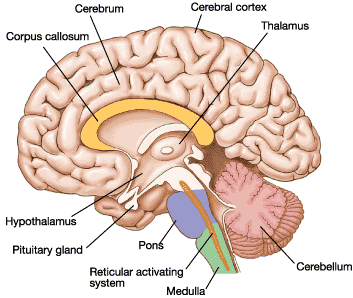
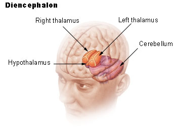
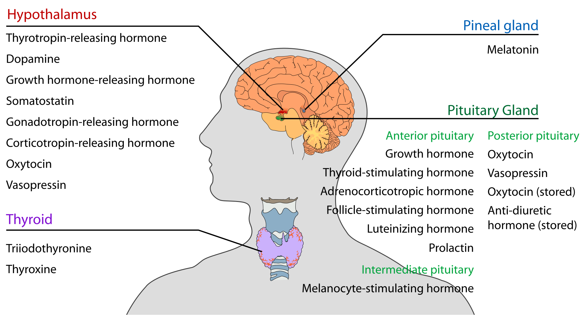
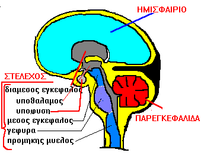
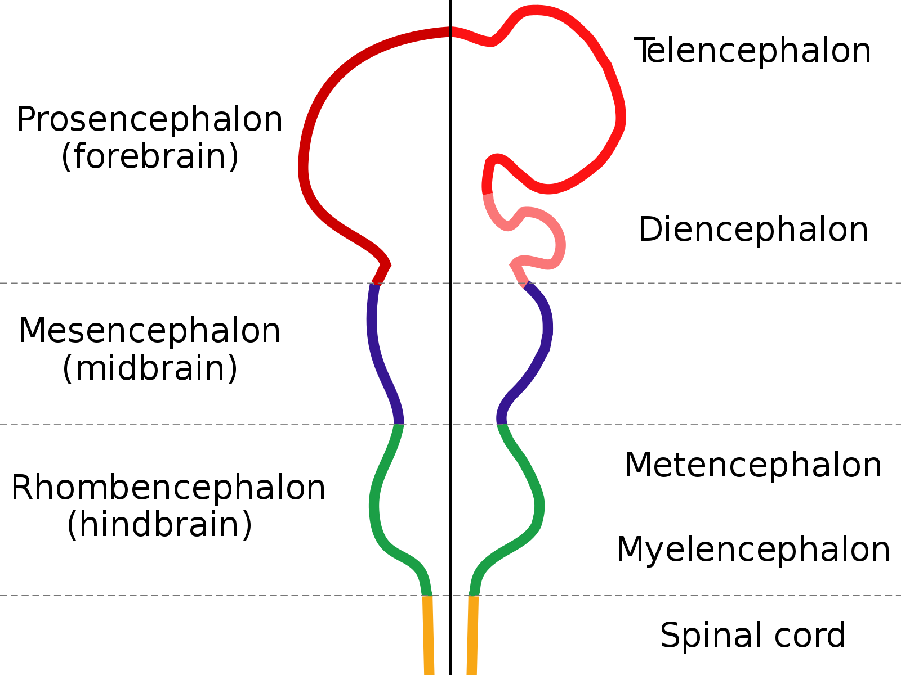
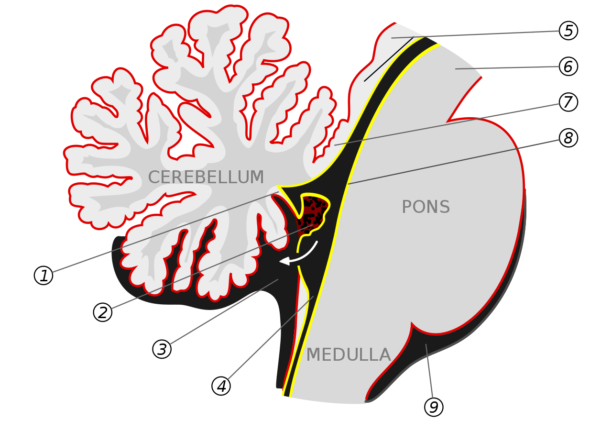

overview of organBrain
description::

definition::
specific-definition:
· human-brain is the-mamalian-brain of a-human-body.
generic-definition:
·
part-definition:
· brain is the-upper part of the-central-nervous-system.
whole-definition:
· the-cerebrum, the-cerebellum and the-brainstem make-up the-brain.
name::
* McsEngl.McsHlth000003.last.html//dirHlth//dirMcs!⇒organBrain,
* McsEngl.dirMcs/dirHlth/McsHlth000003.last.html!⇒organBrain,
* McsEngl.sysNervous'07_organBrain!⇒organBrain,
* McsEngl.sysNervous'organBrain!⇒organBrain,
* McsEngl.sysCentralNervous/organBrain!⇒organBrain,
* McsEngl.organ.002-brain!⇒organBrain,
* McsEngl.organ.brain!⇒organBrain,
* McsEngl.organBrain!⇒organBrain,
* McsEngl.brain!⇒organBrain,
* McsEngl.brainHmn!⇒organBrain,
* McsEngl.human-brain!⇒organBrain,
* McsEngl.organBrain,
* McsEngl.organBrain'(McsHlth000003)!⇒organBrain,
* McsEngl.organBrain'(human-brain)!⇒organBrain,
====== langoGreek:
* McsElln.όργανο.εγκέφαλος!=organBrain,
* McsElln.εγκέφαλος!=organBrain,
* McsElln.μυαλό!=organBrain,
descriptionLong::
The brain is generally defined as the part of the central nervous-system that is contained in the skull. The rest of the central nervous-system -an elongated tube of nerve tissue called the spinal cord- extends from the base of the brain and is contained within the bony vertebral canal. The brain controls the activities of the body and receives information about the body's inner workings and about the outside world by sending and receiving signals via the spinal cord and the peripheral nervous-system. The brain receives the oxygen and food it needs to function by way of a vast network of arteries that carries fresh blood to every part of the brain. (See also Nervous System.)
[ Copyright 1991 Compton's Learning Company ]
===
analytic: ο εγκέφαλος είναι όργανο του εγκεφαλονωτιαιου-νευρικού-συστήματος.
[Αργύρης, {1994}, 85⧺cptRsc29⧺]
===
synthetic: ο εγκέφαλος αποτελείται από νευρικό ιστό.
[Αργύρης, {1994}, 239⧺cptRsc31⧺]
01_cerebrum of organBrain
name::
* McsEngl.organBrain'01_cerebrum,
* McsEngl.organBrain'att004-cerebrum,
* McsEngl.organBrain'cerebrum-att004,
* McsEngl.organBrain/cerebrum,
* McsEngl.cerebrum, /seríbram/,
* McsEngl.forebrain'cerebrum,
* McsEngl.telencephalon,
====== langoGreek:
* McsElln.ημισφαίρια-εγκεφάλου,
description::
· part of forebrain.
===
"The cerebrum or telencephalon is a large part of the brain containing the cerebral cortex (of the two cerebral hemispheres), as well as several subcortical structures, including the hippocampus, basal ganglia, and olfactory bulb. In the human brain, the cerebrum is the uppermost region of the central nervous system. The prosencephalon or forebrain is the embryonic structure from which the cerebrum develops prenatally. In mammals, the dorsal telencephalon, or pallium, develops into the cerebral cortex, and the ventral telencephalon, or subpallium, becomes the basal ganglia. The cerebrum is also divided into approximately symmetric left and right cerebral hemispheres.
With the assistance of the cerebellum, the cerebrum controls all voluntary actions in the human body."
[{1994} https://en.wikipedia.org/wiki/Cerebrum]
===
ημισφαίρια είναι μέρη του εγκεφάλου που καταλαμβάνουν το μεγαλύτερο μέρος.
[Αργύρης,, 86⧺cptRsc29⧺]
whole-tree-of-cerebrum::
* organBrain,
* McsEngl.cerebrum//organBrain,
01_hemisphere of cerebrum
name::
* McsEngl.cerebrum'01_hemisphere,
* McsEngl.cerebrum'hemisphere,
* McsEngl.cerebral-hemisphere,
* McsEngl.hemisphere-of-cerebrum,
* McsEngl.organBrain'att038-hemisphere,
* McsEngl.organBrain'hemisphere-att038,
description::
"The vertebrate cerebrum (brain) is formed by two cerebral hemispheres that are separated by a groove, the longitudinal fissure. The brain can thus be described as being divided into left and right cerebral hemispheres. Each of these hemispheres has an outer layer of grey matter, the cerebral cortex, that is supported by an inner layer of white matter. In eutherian (placental) mammals, the hemispheres are linked by the corpus callosum, a very large bundle of nerve fibers. Smaller commissures, including the anterior commissure, the posterior commissure and the fornix, also join the hemispheres and these are also present in other vertebrates. These commissures transfer information between the two hemispheres to coordinate localized functions.
There are three known poles of the cerebral hemispheres: the occipital pole, the frontal pole, and the temporal pole.
The central sulcus is a prominent fissure which separates the parietal lobe from the frontal lobe and the primary motor cortex from the primary somatosensory cortex.
Macroscopically the hemispheres are roughly mirror images of each other, with only subtle differences, such as the Yakovlevian torque seen in the human brain, which is a slight warping of the right side, bringing it just forward of the left side. On a microscopic level, the cytoarchitecture of the cerebral cortex, shows the functions of cells, quantities of neurotransmitter levels and receptor subtypes to be markedly asymmetrical between the hemispheres.[1][2] However, while some of these hemispheric distribution differences are consistent across human beings, or even across some species, many observable distribution differences vary from individual to individual within a given species."
[{2020-05-02} https://en.wikipedia.org/wiki/Cerebral_hemisphere]
left-hemisphere
name::
* McsEngl.organBrain'att008-left-brain,
* McsEngl.organBrain'left-brain-att008,
* McsEngl.left-hemisphere,
====== langoGreek:
* McsElln.αριστερό-ημισφαίριο!=left-hemisphere,
description::
"Left Brain—left half of the brain; controls right side of the body; typically responsible for tasks that involve logic like science and mathematics, language and reasoning although this may be different depending upon whether the person is right- or left-handed"
[{2020-04-26} https://www.brainlab.org/get-educated/brain-tumors/learn-brain-anatomy-basics/brain-anatomy/]
analytic: αριστερό ημισφαίριο είναι το cerebrum στο αριστερό μέρος του σώματος.
whole-tree-of-left-hemisphere::
* cerebrum,
* McsEngl.left-hemisphere//cerebrum,
doing
doing::
ελέγχει
το δεξί χέρι,
τη γλωσσική παραγωγή και τη σύνταξη. (ικανότητα λόγου)
[Καθημερινή, {1995-03-12}, 43 Panorama]
right-hemisphere
name::
* McsEngl.organBrain'att009-right-brain,
* McsEngl.organBrain'right-brain-att009,
* McsEngl.right-hemisphere,
====== langoGreek:
* McsElln.δεξί-ημισφαίριο!=right-hemisphere,
* McsElln.ημισφαίριο'δεξί!=right-hemisphere,
description::
analytic: δεξί ημισφαίριο είναι cerebrum στο δεξί μέρος του σώματος.
whole-tree-of-right-hemisphere::
* cerebrum,
* McsEngl.right-hemisphere//cerebrum,
doing
doing::
ελέγχει
τον προσανατολισμό
τη συνομιλία
την κλίση στα μαθηματικά
την τέχνη.
[Καθημερινή, {1995-03-12}, 43 Panorama]
02_longitudinal-fissure of cerebrum
name::
* McsEngl.cerebrum'02_longitudinal-fissure,
* McsEngl.cerebrum'longitudinal-fissure,
* McsEngl.organBrain'att044-longitudinal-fissure,
* McsEngl.organBrain'longitudinal-fissure-att044,
* McsEngl.longitudinal-fissure,
description::
"The longitudinal fissure (or cerebral fissure, median longitudinal fissure, interhemispheric fissure) is the deep groove that separates the two cerebral hemispheres of the vertebrate brain. Lying within it is a continuation of the dura mater (one of the meninges) called the falx cerebri.[1] The inner surfaces of the two hemispheres are convoluted by gyri and sulci just as is the outer surface of the brain."
[{2020-05-02} https://en.wikipedia.org/wiki/Longitudinal_fissure]
03_corpus-callosum of cerebrum
name::
* McsEngl.cerebrum'03_corpus-callosum,
* McsEngl.cerebrum'corpus-callosum,
* McsEngl.organBrain'att045-corpus-callosum,
* McsEngl.organBrain'corpus-callosum-att045,
* McsEngl.corpus-callosum,
description::
"The corpus callosum (Latin for "tough body"), also callosal commissure, is a wide, thick nerve tract, consisting of a flat bundle of commissural fibers, beneath the cerebral cortex in the brain. The corpus callosum is only found in placental mammals.[1] It spans part of the longitudinal fissure, connecting the left and right cerebral hemispheres, enabling communication between them. It is the largest white matter structure in the human brain, about ten centimetres in length and consisting of 200–300 million axonal projections.[2][3]
A number of separate nerve tracts, classed as subregions of the corpus callosum, connect different parts of the hemispheres. The main ones are known as the genu, the rostrum, the trunk or body, and the splenium.[4]"
[{2020-05-02} https://en.wikipedia.org/wiki/Corpus_callosum]
04_lobe of cerebrum
name::
* McsEngl.cerebrum'04_lobe!⇒lobeBrain,
* McsEngl.cerebrum'lobe!⇒lobeBrain,
* McsEngl.brain'att037-lobe!⇒lobeBrain,
* McsEngl.lobeBrain,
* McsEngl.cerebral-lobe!⇒lobeBrain,
* McsEngl.lobe-of-cerebrum!⇒lobeBrain,
====== langoGreek:
* McsElln.λοβός!=lobeBrain,
description::
"The lobes of the brain were originally a purely anatomical classification, but have been shown also to be related to different brain functions. The cerebrum, the largest portion of the human brain, is divided into lobes, but so is the cerebellum. If not specified, the expression "lobes of the brain" refers to the cerebrum.
Terminologia Anatomica (1998) and Terminologia Neuroanatomica (2017) divides the cerebrum into 6 lobes.[1][2]"
[{2020-05-02} https://en.wikipedia.org/wiki/Lobes_of_the_brain]
===
analytic: λοβός είναι καθένα από τα 5 μέρη κάθε ημισφαιρίου που σχηματίζονται από τις πιό βαθειές αυλακες του.
[hmnSngo, {1995-03}]
whole-tree-of-lobeBrain::
* cerebrum,
* McsEngl.lobeBrain//cerebrum,
lobe.frontal of cerebrum
name::
* McsEngl.cerebrum'lobe.frontal!⇒lobeFrontal,
* McsEngl.organBrain'att050-lobe.frontal!⇒lobeFrontal,
* McsEngl.organBrain'lobe.frontal!⇒lobeFrontal,
* McsEngl.frontal-lobe!⇒lobeFrontal,
* McsEngl.lobeFrontal,
====== langoGreek:
* McsElln.μετωπιαίος-λοβός!=lobeFrontal,
description::
analytic: μετωπικος λοβός είναι lobeBrain ημισφαιρίου που βρίσκεται στο μπροστινό μέρος.
[hmnSngo, {1995-03}]
generic-tree-of-lobeFrontal::
* lobeBrain,
* McsEngl.lobeFrontal:lobeBrain,
whole-tree-of-lobeFrontal::
* cerebrum,
* McsEngl.lobeFrontal//cerebrum,
SPECIFIC
specific-tree-of-::
* αριστερού ημισφαιρίου,
* δεξιού ημισφαιρίου,
lobe.parietal of cerebrum
name::
* McsEngl.cerebrum'lobe.parietal!⇒lobeParietal, /paráetal/,
* McsEngl.organBrain'att049-lobe.parietal!⇒lobeParietal,
* McsEngl.organBrain'lobe.parietal!⇒lobeParietal,
* McsEngl.lobeParietal,
* McsEngl.parietal-lobe!⇒lobeParietal,
====== langoGreek:
* McsElln.βρεγματικός-λοβός!=lobeParietal,
description::
analytic: βρεγματικός λοβός είναι lobeBrain ημισφαιρίου που βρίσκεται πίσω από τον μετωπικό.
[hmnSngo, {1995-03}]
generic-tree-of-lobeParietal::
* lobeBrain,
* McsEngl.lobeParietal:lobeBrain,
whole-tree-of-lobeParietal::
* cerebrum,
* McsEngl.lobeParietal//cerebrum,
SPECIFIC
specific-tree-of-::
* αριστερού ημισφαιρίου,
* δεξιού ημισφαιρίου,
lobe.occipital of cerebrum
name::
* McsEngl.cerebrum'lobe.occipital,
* McsEngl.organBrain'att051-lobe.occipital,
* McsEngl.organBrain'lobe.occipital,
* McsEngl.lobeOccipital,
* McsEngl.occipital-lobe,
====== langoGreek:
* McsElln.ινιακός-λοβός!=lobeOccipital,
description::
analytic: ινιακός λοβός είναι lobeBrain ημισφαιρίου που βρίσκεται στο πίσω μέρος.
[hmnSngo, {1995-03}]
The occipital lobe is the visual processing center of the mammalian brain, containing most of the anatomical region of the visual cortex. The primary visual cortex is Brodmann area 17, commonly called V1 (visual one). Human V1 is located on the medial side of the occipital lobe within the calcarine sulcus; the full extent of V1 often continues onto the posterior pole of the occipital lobe. V1 is often also called striate cortex because it can be identified by a large stripe of myelin, the Stria of Gennari. Visually driven regions outside V1 are called extrastriate cortex. There are many extrastriate regions, and these are specialized for different visual tasks, such as visuospatial processing, color discrimination and motion perception.
[http://en.wikipedia.org/wiki/Occipital_lobe]
generic-tree-of-lobeOccipital::
* lobeBrain,
* McsEngl.lobeOccipital:lobeBrain,
whole-tree-of-lobeOccipital::
* cerebrum,
* McsEngl.lobeOccipital//cerebrum,
SPECIFIC
specific-tree-of-::
* αριστερού ημισφαιρίου,
* δεξιού ημισφαιρίου,
lobe.temporal of cerebrum
descriptionShort::
"The human temporal lobe is a region of the brain that is located on the sides of the head, near the ears. It plays a crucial role in processing sensory information related to hearing, language comprehension, and memory formation."
[{2023-04-23 retrieved} https://chat.openai.com/?model=text-davinci-002-render-sha]
name::
* McsEngl.cerebrum'lobe.temporal,
* McsEngl.organBrain'att052-lobe.temporal,
* McsEngl.organBrain'lobe.temporal,
* McsEngl.lobeTemporal,
* McsEngl.temporal-lobe,
====== langoGreek:
* McsElln.κροταφικός-λοβός!=lobeTemporal,
description::
"The human temporal lobe is a region of the brain that is located on the sides of the head, near the ears. It plays a crucial role in processing sensory information related to hearing, language comprehension, and memory formation.
Within the temporal lobe, there are several structures, including the hippocampus, amygdala, and auditory cortex. The hippocampus is responsible for forming and consolidating memories, while the amygdala plays a role in processing emotional information. The auditory cortex is responsible for processing sound information and allowing us to understand speech and language.
Additionally, the temporal lobe is also involved in the recognition of faces and objects. Lesions or damage to the temporal lobe can result in a variety of neurological disorders, including memory loss, language impairments, and difficulty recognizing faces or objects."
[{2023-04-23 retrieved} https://chat.openai.com/?model=text-davinci-002-render-sha]
===
analytic: κροταφικός λοβός είναι lobeBrain ημισφαιρίου που βρίσκεται στα πλαγια.
[hmnSngo, {1995-03}]
generic-tree-of-lobeTemporal::
* lobeBrain,
* McsEngl.lobeTemporal:lobeBrain,
whole-tree-of-lobeTemporal::
* cerebrum,
* McsEngl.lobeTemporal//cerebrum,
hippocampus of lobeTemporal
description::
"The hippocampus is a small, curved structure located in the temporal lobe of the brain. It is involved in the formation, consolidation, and retrieval of long-term memories, as well as spatial navigation.
The hippocampus is composed of two main regions: the cornu ammonis (CA) and the dentate gyrus. The CA region is further divided into four subfields: CA1, CA2, CA3, and CA4.
The hippocampus plays a crucial role in spatial learning and memory, such as remembering the layout of a new environment or the location of objects within that environment. It is also involved in declarative memory, which is the type of memory that allows us to recall facts and events.
Damage to the hippocampus can result in memory deficits, such as anterograde amnesia (difficulty forming new memories) and retrograde amnesia (difficulty recalling past memories). Additionally, some research has suggested that the hippocampus may be involved in mood regulation and emotional processing."
[{2023-04-23 retrieved} https://chat.openai.com/?model=text-davinci-002-render-sha]
name::
* McsEngl.hippocampus,
* McsEngl.lobeTemporal/hippocampus,
* McsEngl.organBrain'att060-hippocampus,
* McsEngl.organBrain'hippocampus,
amygdala of lobeTemporal
description::
"amygdala
The amygdala is a small almond-shaped structure located deep within the temporal lobe of the brain. It is considered to be a part of the limbic system, which is involved in emotional processing and behavior.
The amygdala is known to play a key role in the processing and regulation of emotions, particularly fear and anxiety. It is also involved in the formation and retrieval of emotional memories, as well as in social behavior and decision-making.
Research has suggested that dysfunction in the amygdala may be implicated in a range of psychiatric disorders, such as anxiety disorders, depression, and post-traumatic stress disorder (PTSD)."
[{2023-04-23 retrieved} https://chat.openai.com/?model=text-davinci-002-render-sha]
name::
* McsEngl.amygdala,
* McsEngl.lobeTemporal/amygdala,
* McsEngl.organBrain'att059-amygdala,
* McsEngl.organBrain'amygdala,
SPECIFIC of lobeTemporal
specific-tree-of-lobeTemporal::
* αριστερού ημισφαιρίου,
* δεξιού ημισφαιρίου,
lobe.central of cerebrum
name::
* McsEngl.cerebrum'lobe.central,
* McsEngl.lobeCentral,
* McsEngl.organBrain'att047-lobe.central,
* McsEngl.organBrain'lobe.central,
* McsEngl.central-lobe,
====== langoGreek:
* McsElln.κεντρικός-λοβός!⇒lobeCentral,
description::
analytic: κεντρικός λοβός είναι lobeBrain ημισφαιρίου που δεν φαίνεται γιατί οι άλλοι τον καλύπτουν.
[hmnSngo, {1995-03}]
generic-tree-of-lobeCentral::
* lobeBrain,
* McsEngl.lobeCentral:lobeBrain,
whole-tree-of-lobeCentral::
* cerebrum,
* McsEngl.lobeCentral//cerebrum,
SPECIFIC
specific-tree-of-::
* αριστερού ημισφαιρίου,
* δεξιού ημισφαιρίου,
lobe.limbic of cerebrum
name::
* McsEngl.cerebrum'lobe.limbic,
* McsEngl.organBrain'att048-lobe.limbic,
* McsEngl.organBrain'lobe.limbic,
* McsEngl.limbic-lobe,
description::
"The limbic lobe is an arc-shaped region of cortex on the medial surface of each cerebral hemisphere of the mammalian brain, consisting of parts of the frontal, parietal and temporal lobes. The term is ambiguous, with some authors[who?] including the paraterminal gyrus, the subcallosal area, the cingulate gyrus, the parahippocampal gyrus, the dentate gyrus, the hippocampus and the subiculum;[1] while the Terminologia Anatomica includes the cingulate sulcus, the cingulate gyrus, the isthmus of cingulate gyrus, the fasciolar gyrus, the parahippocampal gyrus, the parahippocampal sulcus, the dentate gyrus, the fimbrodentate sulcus, the fimbria of hippocampus, the collateral sulcus, and the rhinal sulcus, and omits the hippocampus."
[{2020-05-03} https://en.wikipedia.org/wiki/Limbic_lobe]
05_cortex of cerebrum
description::
"The cerebral cortex, also known as the cerebral mantle,[1] is the outer layer of neural tissue of the cerebrum of the brain in humans and other mammals. The cerebral cortex mostly consists of the six-layered neocortex, with just 10% consisting of allocortex.[2] It is separated into two cortices, by the longitudinal fissure that divides the cerebrum into the left and right cerebral hemispheres. The two hemispheres are joined beneath the cortex by the corpus callosum. The cerebral cortex is the largest site of neural integration in the central nervous system.[3] It plays a key role in attention, perception, awareness, thought, memory, language, and consciousness. The cerebral cortex is part of the brain responsible for cognition."
[{2023-04-13 retrieved} https://en.wikipedia.org/wiki/Cerebral_cortex]
name::
* McsEngl.cerebral-cortex!⇒brain'cortex,
* McsEngl.cerebral-mantle!⇒brain'cortex,
* McsEngl.cerebrum'05_cortex!⇒brain'cortex,
* McsEngl.organBrain'att046-cortex!⇒brain'cortex,
* McsEngl.brain'cortex,
* McsEngl.cortex-of-brain!⇒brain'cortex,
====== langoGreek:
* McsElln.φλοιός-εγκεφάλου!=brain'cortex,
descriptionLong::
ο φλοιός των ημισφαιρίων έχει χρώμα φαιό, φαιά ουσία, ενώ το εσωτερικό λευκό, λευκή ουσία.
η επιφάνεια των ημισφαιρίων φέρει προεξοχές που λέγονται ελικες και διάφορα αυλάκια, αυλακες του εγκεφάλου.
[Αργύρης, {1994}, 87⧺cptRsc29⧺]
===
In humans, subjective experience is distinguishable from higher levels of consciousness, such as self-awareness, which requires a functioning cortex. Subjective experience involves the midbrain rather than the cortex and can continue even after massive damage to the cortex.
Insects are a very large and diverse category of beings. Honeybees have about a million neurons, which isn’t many compared to our roughly 20 billion neocortical neurons, let alone the 37 billion recently found in the neocortex of a pilot whale. But it is still enough to be capable of performing and interpreting the famous “waggle dance” that conveys information about the direction and distance of flowers, water, or potential nest sites. Caterpillars, as far as we know, have no such abilities. But they may still be conscious enough to suffer as they starve.
[https://www.project-syndicate.org/commentary/are-insects-conscious-by-peter-singer-2016-05]
neocortex of brain'cortex
description::
"In the human brain, the neocortex is the largest part of the cerebral cortex, which is the outer layer of the cerebrum, with the allocortex making up the rest. The neocortex is made up of six layers, labelled from the outermost inwards, I to VI. Of all the mammals studied to date (including humans), a species of oceanic dolphin known as the long-finned pilot whale has been found to have the most neocortical neurons.[4]"
[{2020-08-23} https://en.wikipedia.org/wiki/Neocortex]
name::
* McsEngl.brain/cortex/neocortex!⇒brain'neocortex,
* McsEngl.brain'neocortex,
* McsEngl.neocortex!⇒brain'neocortex,
* McsEngl.organBrain'att056-neocortex!⇒brain'neocortex,
* McsEngl.organBrain'neocortex!⇒brain'neocortex,
allocortex of brain'cortex
description::
"The allocortex (also known as heterogenetic cortex) is one of two types in the cerebral cortex, the other being the neocortex. It is characterized by having just three or four cell layers, in contrast with the six layers of the neocortex, and takes up a much smaller area than the neocortex. There are three subtypes of allocortex: the paleocortex, the archicortex, and the periallocortex – a transitional zone between the neocortex and the allocortex.[1]
The specific regions of the brain usually described as belonging to the allocortex are the olfactory system, and the hippocampus.
Allocortex is termed heterogenetic cortex, because during development it never has the six-layered architecture of homogenetic neocortex. It differs from heterotypic cortex, a type of cerebral cortex, which during prenatal development, passes through a six-layered stage to have fewer layers, such as in Brodmann area 4 that lacks granule cells.[2]"
[{2020-08-23} https://en.wikipedia.org/wiki/Allocortex]
name::
* McsEngl.allocortex!⇒brain'allocortex,
* McsEngl.brain'allocortex,
* McsEngl.brain/cortex/allocortex!⇒brain'allocortex,
* McsEngl.organBrain'att057-allocortex!⇒brain'allocortex,
* McsEngl.organBrain'allocortex!⇒brain'allocortex,
structure of cerebrum
name::
* McsEngl.cerebrum'structure,
structure::
* αυλακες,
* ελικες,
* επιμηκης σχισμη,
* cortical-area,
* λευκή ουσία,
* lobe,
* πυρήνες ημισφαιριων,
* συνδεσμοι,
** μεσολοβιο,
* φαιά ουσία,
* φλοιός,
doing of cerebrum
name::
* McsEngl.cerebrum'doing,
οι λειτουργίες των ημισφαιρίων συνοπτικά:
- δέχονται και ερμηνεύουν όλα τα ερεθίσματα και τα καθιστούν συνειδητά.
- δίνουν εντολές για όλες τις εκούσιες κινήσεις.
- κατακρατούν και ταξινομούν όλα τα ερεθίσματα που έρχονται από την περιφέρεια και τα συσχετίζουν με ανάλογα ερεθίσματα που υπάρχουν ως παραστάσεις από το παρελθόν εναποθηκευμένες στη μνήμη.
- αποτελούν την έδρα των πνευματικών λειτουργιών του ατόμου.
- εξασκούν υποσυνείδητο έλεγχο σε πολλές λειτουργίες του σώματος.
- εξασκούν έλεγχο σε άλλα μέρη του εγκεφάλου.
[Αργύρης, {1994}, 254⧺cptRsc31⧺]
When Do the Two Sides of the Brain Work Together?
To understand puns, both hemispheres of the brain must work together because of the unusual nature of the humor.
Research has shown that injuries to the right hemisphere of the brain can affect a person’s sense of humor. To better understand the neuroscience of puns, a type of humor that requires the brain to sort through twists in wordplay, neuroscientists at the University of Windsor in Ontario, Canada, tested the responses of both sides of the brain to puns. They found that getting the joke took cooperation between both hemispheres -- the left side is tasked with linguistic inputs, while the right hemisphere is used to analyze the punchline’s double meaning.
[http://www.wisegeek.com/when-do-the-two-sides-of-the-brain-work-together.htm?m {2018-04-23}]
02_brainstem of organBrain
name::
* McsEngl.organBrain'02_brainstem,
* McsEngl.organBrain'att039-brainstem,
* McsEngl.organBrain'brainstem-att039,
* McsEngl.organBrain/brainstem,
* McsEngl.brainstem,
* McsEngl.brainstem//organBrain,
====== langoGreek:
* McsElln.στέλεχος-εγκεφάλου!=brainstem,
description::
"The brainstem (or brain stem) is the posterior part of the brain, continuous with the spinal cord. In the human brain the brainstem includes the midbrain, the pons and medulla oblongata of the hindbrain. The midbrain continues with the thalamus of the diencephalon through the tentorial notch,[1]:152 and sometimes the diencephalon is included in the brainstem.[2]:248
The brainstem is a very small component of the brain, making up only around 2.6 percent of the total weight of the brain.[1]:195 It is though, a crucial part of the brain providing the main motor and sensory nerve supply to the face and neck via the cranial nerves. Ten pairs of cranial nerves come from the brainstem. It is also of prime importance in the conveyance of motor and sensory pathways from the rest of the brain to the body, and from the body back to the brain. These pathways include the corticospinal tract (motor), the dorsal column-medial lemniscus pathway (fine touch, vibration sensation, and proprioception), and the spinothalamic tract (pain, temperature, itch, and crude touch).
The parts of the brainstem also play important roles in the regulation of cardiac and respiratory function, helping to control heart rate and breathing rate. Other roles include the regulation of the central nervous system, (pivotal in maintaining consciousness), and in the regulation of the sleep cycle."
[{2020-05-02} https://en.wikipedia.org/wiki/Brainstem]
===
"The brainstem is the stalk-like portion of the brain that connects the cerebrum with the spinal cord. It contains a variety of important processing centers. The diencephalon consists of the thalamus, a processing center, and the hypothalamus which controls emotion. The midbrain processes visual and auditory information while the pons connects the cerebellum to the brain. The medulla oblongata connects the spinal cord to the brain."
[{2020-04-29} https://blausen.com/en/video/brainstem/]
01_diencephalon of brainstem
name::
* McsEngl.brainstem'01_diencephalon,
* McsEngl.brainstem'diencephalon,
* McsEngl.organBrain'att006-diencephalon,
* McsEngl.organBrain'diencephalon-att006,
* McsEngl.diencephalon/daencéfalon/,
* McsEngl.diencephalon,
====== langoGreek:
* McsElln.διάμεσος-εγκέφαλος!=diencephalon,
description::

"The diencephalon is a division of the forebrain (embryonic prosencephalon), and is situated between the telencephalon and the midbrain (embryonic mesencephalon). It consists of structures that are on either side of the third ventricle, including the thalamus, the hypothalamus, the epithalamus and the subthalamus.
The diencephalon is one of the main vesicles of the brain formed during embryogenesis. During the third week of development a neural tube is created from the ectoderm, one of the three primary germ layers. The tube forms three main vesicles during the third week of development: the prosencephalon, the mesencephalon and the rhombencephalon. The prosencephalon gradually divides into the telencephalon and the diencephalon."
[{2020-02-29} https://en.wikipedia.org/wiki/Diencephalon]
===
analytic: διάμεσος εγκέφαλος είναι μέρος του στελέχους εγκεφάλου, το πρώτο μέρος από εμπρός.
[Αργύρης, {1994}, 254⧺cptRsc31⧺]
ο διάμεσος εγκέφαλος περιέχει πολλού πυρήνες με σημαντικές λειτουργίες. Οι κυριότεροι είναι οι δυο θαλαμοι, από όπου περνάνε οι κεντρομόλες αισθητικές νευρικές οδοί, και ο υποθάλαμος. Ο υποθάλαμος είναι σημαντικός, γιατί ρυθμίζει τις ορμονικές εκκρίσεις, τις λειτουργίες του αυτόνομου νευρικού συτήματος, το μεταβολισμό και περιέχει κέντρα όπως του ύπνου, της θερμοκρασίας κτλ. Στον υποθάλαμο ανήκει επίσης και μέρος της υπόφυσης, που σαν ενδοκρινής αδένας ρυθμίζει τις λειτουργίες των άλλων ανδοκρινών αδένων.
[Αργύρης, {1994}, 254⧺cptRsc31⧺]
thalamus of diencephalon
name::
* McsEngl.diencephalon'thalamus,
* McsEngl.organBrain'att007-thalamus,
* McsEngl.organBrain'thalamus-att007,
* McsEngl.thalamus-of-diencephalon,
description::
"The thalamus (from Greek θάλαμος, "chamber")[1] is a large mass of gray matter located in the dorsal part of the diencephalon (a division of the forebrain). Nerve fibers project out of the thalamus to the cerebral cortex in all directions, allowing hub-like exchanges of information. It has several functions, such as relaying of sensory signals, including motor signals to the cerebral cortex,[2][3][page needed] and the regulation of consciousness, sleep, and alertness.[4]
Anatomically, it is a midline symmetrical structure of two halves (left and right), within the vertebrate brain, situated between the cerebral cortex and the midbrain. It forms during embryonic development as the main product of the diencephalon, as first recognized by the Swiss embryologist and anatomist Wilhelm His Sr. in 1893.[5]"
[{2020-04-26} https://en.wikipedia.org/wiki/Thalamus]
hypothalamus-gland of diencephalon
name::
* McsEngl.glandHypothalamus,
* McsEngl.hypothalamus-gland!⇒glandHypothalamus,
* McsEngl.ognGland.021-hypothalamus!⇒glandHypothalamus,
* McsEngl.ognGland.hypothalamus!⇒glandHypothalamus,
====== langoGreek:
* McsElln.υποθάλαμος-αδένας!=glandHypothalamus,
description::

[{2020-03-22} https://en.wikipedia.org/wiki/Hypothalamus#/media/File:Endocrine_central_nervous_en.svg]
"The hypothalamus is a portion of the brain that contains a number of small nuclei with a variety of functions. One of the most important functions of the hypothalamus is to link the nervous system to the endocrine system via the pituitary gland. The hypothalamus is located below the thalamus and is part of the limbic system.[1] In the terminology of neuroanatomy, it forms the ventral part of the diencephalon. All vertebrate brains contain a hypothalamus. In humans, it is the size of an almond. The hypothalamus is responsible for the regulation of certain metabolic processes and other activities of the autonomic nervous system. It synthesizes and secretes certain neurohormones, called releasing hormones or hypothalamic hormones, and these in turn stimulate or inhibit the secretion of hormones from the pituitary gland. The hypothalamus controls body temperature, hunger, important aspects of parenting and attachment behaviours, thirst,[2] fatigue, sleep, and circadian rhythms.[3] The hypothalamus derives its name from Greek ὑπό, under and θάλαμος, chamber."
[http://en.wikipedia.org/wiki/Hypothalamus]
===
ο υποθάλαμος είναι μέρος του διαμεσου-εγκεφάλου.
[Αργύρης, {1994}, 255⧺cptRsc31⧺]

whole-tree-of-glandHypothalamus::
* diencephalon,
* McsEngl.glandHypothalamus//diencephalon,
structure of hypothalamus
structure::
* κέντρο-θερμοκρασίας,
* κέντρο-ύπνου,
* glandHypophysis,
περιέχει κέντρα όπως του ύπνου, της θερμοκρασίας κτλ. Στον υποθάλαμο ανήκει επίσης και μέρος της υπόφυσης, που σαν ενδοκρινής αδένας ρυθμίζει τις λειτουργίες των άλλων ενδοκρινών αδένων.
[Αργύρης, {1994}, 254⧺cptRsc31⧺]
doing of hypothalamus
doing::
* αυτονομου νευρικούς συστήματος ρύθμιση,
* θερμοκρασίας ρύθμιση,
* μεταβολισμου ρύθμιση,
* ορμονικων εκκρίσεων ρύθμιση,
* ύπνου ρύθμιση,
ο υποθάλαμος είναι σημαντικός, γιατί ρυθμίζει τις ορμονικές εκκρίσεις, τις λειτουργίες του αυτόνομου νευρικού συτήματος, το μεταβολισμό και περιέχει κέντρα όπως του ύπνου, της θερμοκρασίας κτλ. Στον υποθάλαμο ανήκει επίσης και μέρος της υπόφυσης, που σαν ενδοκρινής αδένας ρυθμίζει τις λειτουργίες των άλλων ανδοκρινών αδένων.
[Αργύρης, {1994}, 254⧺cptRsc31⧺]
η έκκριση των ορμονών της αδενοϋπόφυσης ελεγχονται από τον υποθάλαμο. Αυτό γίνεται με ορισμένες χημικές ουσίες που ονομάζονται εκλυτικοί παράγοντες. Οι ουσίες αυτές συντίθενται μέσα σε νευρικά κύτταρα σε ορισμένες περιοχές του υποθάλαμου, από τα οποία περνούν στην αδενουπόφυση μέσα από ένα τοπικό σύστημα κυκλοφορίας (πυλαία κυκλοφορία της υπόφυσης). στην υπόφυση πλέον, οι εκλυτικοί αυτοί παράγοντες διεγείρουν άμεσα τα ειδικά κύτταρα του αδένα στην παραγωγή και την έκκριση των ορμονών που το χαρακτηρίζουν.
[Αργύρης, {1994}, 418⧺cptRsc31⧺]
releasing-hormone (link) of hypothalamus
pituitary-gland of forebrain
name::
* McsEngl.glandHypophysis,
* McsEngl.ognGland.011-hypophysis!⇒glandHypophysis,
* McsEngl.ognGland.hypophysis!⇒glandHypophysis,
* McsEngl.hypophysis-gland!⇒glandHypophysis,
* McsEngl.pituitary-gland!⇒glandHypophysis, /pitúitári-gland/,
====== langoGreek:
* McsElln.υπόφυση!=glandHypophysis,
description::
"In vertebrate anatomy, the pituitary gland, or hypophysis, is an endocrine gland, about the size of a pea and weighing 0.5 grams (0.018 oz) in humans. It is a protrusion off the bottom of the hypothalamus at the base of the brain. The hypophysis rests upon the hypophysial fossa of the sphenoid bone in the center of the middle cranial fossa and is surrounded by a small bony cavity (sella turcica) covered by a dural fold (diaphragma sellae).[2] The anterior pituitary (or adenohypophysis) is a lobe of the gland that regulates several physiological processes (including stress, growth, reproduction, and lactation). The intermediate lobe synthesizes and secretes melanocyte-stimulating hormone. The posterior pituitary (or neurohypophysis) is a lobe of the gland that is functionally connected to the hypothalamus by the median eminence via a small tube called the pituitary stalk (also called the infundibular stalk or the infundibulum).
Hormones secreted from the pituitary gland help to control growth, blood pressure, energy management, all functions of the sex organs, thyroid glands and metabolism as well as some aspects of pregnancy, childbirth, breastfeeding, water/salt concentration at the kidneys, temperature regulation and pain relief."
===
analytic: η υπόφυση είναι ενδοκρινής αδένας που μέρος της βρίσκεται στον υποθάλαμο.
[Αργύρης, {1994}, 255⧺cptRsc31⧺]
===
generic-tree-of-glandHypophysis::
* endocrine-gland,
* McsEngl.glandHypophysis:glandEndocrine,
whole-tree-of-glandHypophysis::
* glandHypothalamus,
* McsEngl.glandHypophysis//glandHypothalamus,
anterior-pituitary
name::
* McsEngl.cptBdyHmn517,
* McsEngl.anterior-pituitary!⇒adenophytosis,
* McsEngl.adenophytosis, /adenofáitosis/,
====== langoGreek:
* McsElln.αδενουπόφυση!=adenophytosis,
description::
analytic: η αδενουπόφυση είναι το πρόσθιο μέρος (λοβός) της υπόφυσης.
[Αργύρης, {1994}, 418⧺cptRsc31⧺]
whole-tree-of-adenophytosis::
* glandHypophysis,
* McsEngl.adenophytosis//glandHypophysis,
doing
doing::
είναι ειδικά οι λειτουργίες της αδενοϋπόφυσης που διεγείρουν τη λειτουργία πολλών άλλων ενδοκρινών αδένων στο σώμα.
[Αργύρης, {1994}, 418⧺cptRsc31⧺]
managing
υποθάλαμος⧺cptBdyHmn408⧺
η έκκριση των ορμονών της αδενοϋπόφυσης ελεγχονται από τον υποθάλαμο.
[Αργύρης, {1994}, 418⧺cptRsc31⧺]
posterior-pituitary
name::
* McsEngl.cptBdyHmn518,
* McsEngl.posterior-pituitary!⇒neurohypophysis,
* McsEngl.neurohypophysis,
====== langoGreek:
* McsElln.νευροϋπόφυση!=neurohypophysis,
description::
analytic: η νευροϋπόφυση είναι το πίσω μέρος (λοβός) της υπόφυσης.
[Αργύρης, {1994}, 418⧺cptRsc31⧺]
whole-tree-of-neurohypophysis::
* glandHypophysis,
* McsEngl.neurohypophysis//glandHypophysis,
pars-intermedia
name::
* McsEngl.cptBdyHmn526,
* McsEngl.pars-intermedia,
====== langoGreek:
* McsElln.διάμεσος-λοβός!=pars-intermedia,
description::
analytic: ο διάμεσος λοβός είναι περιοχή της υπόφυσης μεταξύ των δύο λοβών (είναι ιδιαίτερα αναπτυγμένη στα κατώτερα ζώα).
[Αργύρης, {1994}, 420⧺cptRsc31⧺]
whole-tree-of-pars-intermedia::
* glandHypophysis,
* McsEngl.pars-intermedia//glandHypophysis,
secretory-product of pituitary-gland
secretory-product::
* αυξητική-ορμόνη,
structure of pituitary-gland
structure::
* αδενουπόφυση,
* διάμεσος-λοβός,
* νευροϋπόφυση⧺cptBdyHmn518⧺,
===
βρίσκεται τοποθετημένη στη βάση του εγκεφάλου, κάτω από τον υποθάλαμο, με τον οποίο συνδέεται άμεσα μέσω ενός μίσχου. Περιλαμβάνει δύο μορφολογικά διάκριτες περιοχές, την αδενουπόφυση και την νευροϋπόφυση, που είναι αντίστοιχα, ο πρόσθιος και ο οπίσθιος λοβός του αδένα.
[Αργύρης, {1994}, 418⧺cptRsc31⧺]
βρίσκεται στη βάση του εγκεφάλου, έχει μεγεθος μπιζελιού και διακρίνεται σε 3 λοβους, από τους οποίους ο πρόσθιος παράγει τις περισσότερες ορμόνες.
doing of pituitary-gland
doing::
ενδοκρινών αδένων ρύθμιση
κάθε ορμόνη της υπόφυσης διεγείρει την ανάπτυξη και τη δραστηριότητα ενός συγκεκριμένου περιφερικού ενδοκρινούς αδένα, και πιθανώς διεγειρεται από ένα συγκεκριμένο εκλυτικό παράγοντα. Κατά κανόνα, μεγαλύτερες από το φυσιολογικό συγκεντρώσεις ορμονών από έναν περιφερικό ενδοκρινή αδένα αναστέλλουν (μηχανισμός αρνητικης αναδρασης), μέσω του κυκλοφορικού, τη σύνθεση ενός συγκεκριμένου εκλυτικου παραγοντα στον υποθάλαμο. Η αναστολή αυτή, στη συνέχεια, επηρεάζει (περιορίζει) την παραγωγή εκείνης της αδενουπόφυσικής ορμόνης που διεγείρει την εκκριτική δραστηριότητα του συγκεκριμένου περιφερικού ενδοκρινούς αδένα. Αναπτύσσεται, έτσι, ένας αριθμός από πολύπλοκους και ευαίσθητους μηχανισμούς που εξασφαλίζουν τη διατήρηση, στο πλάσμα του αίματος, της συγκέντρωσης των ορμονών στα επίπεδα που καθορίζουν οι ειδικές απαιτήσεις για την παρουσία της.
[Αργύρης, {1994}, 418⧺cptRsc31⧺]
η υπόφυση είναι ενδοκρινής αδένας που ρυθμίζει τις λειτουργίες των άλλων ενδοκρινών αδένων.
[Αργύρης, {1994}, 254⧺cptRsc31⧺]
οι ορμόνες της υπόφυσης επηρεάζουν την ανάπτυξη και τη λειτουργία του
- θυροειδη αδενα
- των επινεφριδίων
- των γεννητικων αδένων
- των παραθυροειδων.
[Αργύρης, {1994}, 120⧺cptRsc29⧺]
02_midbrain of brainstem
name::
* McsEngl.brainstem'02_midbrain!⇒midbrain,
* McsEngl.brainstem'midbrain!⇒midbrain,
* McsEngl.organBrain'att002-midbrain!⇒midbrain,
* McsEngl.organBrain'midbrain!⇒midbrain,
* McsEngl.midbrain,
* McsEngl.embryonic-mesencephalon!⇒midbrain,
====== langoGreek:
* McsElln.μέσος-εγκέφαλος!=midbrain,
description::
"The midbrain or mesencephalon is the forward-most portion of the brainstem and is associated with vision, hearing, motor control, sleep and wakefulness, arousal (alertness), and temperature regulation.[2] The name come from the Greek mesos, "middle", and enkephalos, "brain"[3])"
[{2020-02-29} https://en.wikipedia.org/wiki/Midbrain]
===
analytic: μέσος εγκέφαλος είναι μέρος του στελέχους εγκεφάλου, το δεύτερο μέρος από εμπρός.
[Αργύρης, {1994}, 254⧺cptRsc31⧺]
whole-tree-of-midbrain::
* brainstem,
* McsEngl.midbrain//brainstem,
structure of midbrain
name::
* McsEngl.midbrain'structure,
description::
"The midbrain consists of various cranial nerve nuclei, tectum, tegmentum, colliculi, and crura cerebi."
[{2020-04-26} https://www.brainlab.org/get-educated/brain-tumors/learn-brain-anatomy-basics/brain-anatomy/]
03_pons of brainstem
name::
* McsEngl.brainstem'03_pons,
* McsEngl.brainstem'pons,
* McsEngl.brainstem/pons,
* McsEngl.organBrain'att041-brainstem,
* McsEngl.organBrain'brainstem-att041,
* McsEngl.pons-Varolii,
* McsEngl.pons-of-brainstem,
====== langoGreek:
* McsElln.γέφυρα-στελέχους!=pons-of-brainstem,
description::
analytic: The pons (sometimes pons Varolii after Costanzo Varolio) is a structure located on the brain stem. It is rostral to the medulla oblongata, caudal to the midbrain, and ventral to the cerebellum. In humans and other bipeds this means it is above the medulla, below the midbrain, and anterior to the cerebellum.
[http://en.wikipedia.org/wiki/Pons]
γέφυρα είναι μέρος του στελέχους εγκεφάλου, το τρίτο μέρος από εμπρός.
[Αργύρης, {1994}, 254⧺cptRsc31⧺]
whole-tree-of-pons::
* brainstem,
* McsEngl.pons//brainstem,
doing of pons
doing::
H γέφυρα αποτελεί και διάμεσο σταθμό σύνδεσης του φλοιού με την παρεγκεφαλίδα.
[Αργύρης, {1994}, 255⧺cptRsc31⧺]
04_medulla-oblongata of brainstem
descriptionLong::
"The medulla oblongata or simply medulla is a long stem-like structure which makes up the lower part of the brainstem.[1] It is anterior and partially inferior to the cerebellum. It is a cone-shaped neuronal mass responsible for autonomic (involuntary) functions, ranging from vomiting to sneezing.[2] The medulla contains the cardiac, respiratory, vomiting and vasomotor centers, and therefore deals with the autonomic functions of breathing, heart rate and blood pressure as well as the sleep–wake cycle.[2]"
[{2023-04-16 retrieved} https://en.wikipedia.org/wiki/Medulla_oblongata]
name::
* McsEngl.brainstem'04_medulla-oblongata,
* McsEngl.brainstem'medulla-oblongata,
* McsEngl.organBrain'att042-medulla-oblongata,
* McsEngl.organBrain'medulla-oblongata-att042,
* McsEngl.medulla-oblongata,
====== langoGreek:
* McsElln.προμήκης-μυελός!=medulla-oblongata,
description::
analytic: The medulla oblongata is the lower portion of the brainstem.
[http://en.wikipedia.org/wiki/Medulla_oblongata]
το τμήμα του στελέχους που είναι προς το μέρος του νωτιαίου μυελού λέγεται προμήκης μυελός.
[Αργύρης, {1994}, 86⧺cptRsc29⧺]
whole-tree-of-medulla-oblongata::
* στέλεχος-εγκεφάλου,
* McsEngl.medulla-oblongata//brainstem,
disease of medulla-oblongata
disease::
βλάβη του προμήκη συνεπάγεται το θάνατο. Η βλάβη του προμήκη μπορεί να συμβεί εύκολα στα ατυχήματα, γιατί ο προμήκης βρίσκεται στο όριο κρανίου-σπονδυλικής στήλης.
[Αργύρης, {1994}, 255⧺cptRsc31⧺]
doing of medulla-oblongata
doing::
* αναπνοής ρύθμιση,
* βήχα ρύθμιση,
* εμετού ρύθμιση,
* καρδιακής λειτουργίας ρύθμιση,
* πρόσληψη τροφής ρύθμιση,
O προμήκης αποτελεί κέντρο ρύθμισης σημαντικού αριθμού ζωτικών για τον οργανισμό λειτουργιών, γιατί περικλείει τα κέντρα αναπνοής, της καρδιακής λειτουργίας, της πρόσληψης τροφής, του βήχα, του εμετού κτλ.
[Αργύρης, {1994}, 255⧺cptRsc31⧺]
structure of brainstem
name::
* McsEngl.brainstem'structure,
description::
03_cerebellum of organBrain
description::
"The human cerebellum is a part of the brain that is located at the base of the skull, underneath the cerebral cortex. It is involved in the regulation of motor movements, balance, and coordination, as well as other cognitive functions such as attention and language processing."
[{2023-04-13 retrieved} https://chat.openai.com/chat]
name::
* McsEngl.organBrain'03_cerebellum,
* McsEngl.organBrain'att005-cerebellum,
* McsEngl.organBrain'cerebellum-att005,
* McsEngl.organBrain/cerebellum,
* McsEngl.cerebellum,
* McsEngl.hindbrain;cerebellum,
====== langoGreek:
* McsElln.παρεγκεφαλίδα!=cerebellum,
descriptionLong::

[{1994} https://en.wikipedia.org/wiki/Cerebellum#/media/File:Cerebellum_animation_small.gif]
η παρεγκεφαλίδα είναι μέρος του εγκεφάλου κάτω από τα cerebrum, πίσω από το brainstem.
[Αργύρης,, 251⧺cptRsc31⧺]
whole-tree-of-cerebellum::
* organBrain,
* McsEngl.cerebellum//organBrain,
disease (link) of cerebellum
structure of cerebellum
name::
* McsEngl.cerebellum'structure,
description::
* ημισφαίρια παρεγκεφαλίδας (2),
* λευκή-ουσία,
* πυρήνες,
* σκώληκας,
* φαιά-ουσία,
===
"The human cerebellum is a part of the brain that helps coordinate and regulate a wide range of functions and processes in both your brain and body. It is located at the back of your head, just above and behind where your spinal cord connects to your brain1. It is divided into three lobes separated by fissures2. It contains more than half of the neurons (cells that make up your nervous system) in your whole body1.
1. my.clevelandclinic.org 2. healthline.com 3. medicalnewstoday.com"
[{2023-04-13 retrieved} https://www.bing.com/search?q=Bing+AI&showconv=1&FORM=hpcodx]
===
η παρεγκεφαλίδα που βρίσκεται πίσω από τη γέφυρα και τον προμήκη, αποτελείται από το σκώληκα, στη μέση, και από τα ημισφαίρια της παρεγκεφαλίδας. Οπως στα ημισφαίρια του εγκεφάλου, έτσι και στην παρεγκεφαλίδα, περιφερικά βρίσκεται φαιά ουσία (φλοιός της παρεγκεφαλίδας) που σχηματίζει και εδώ έλικες, ενώ εσωτερικά βρίσκεται λευκή ουσία και πυρήνες. Λόγω αυτής της κατασκευής η παρεγκεφαλίδα σε κατακόρυφη προσθιοπίσθια διατομή (οβελιαία) μοιάζει με φύλλο ενός δέντρου και λέγεται 'δένδρο της ζωής'.
[Αργύρης, {1994}, 255⧺cptRsc31⧺]
doing of cerebellum
name::
* McsEngl.cerebellum'doing,
description::
* ομιλία,
* συντονίζει τις κινήσεις,
===
"Some of the functions of the human cerebellum are:
* Balance and posture: It works with sensory input from your eyes and ears to keep you upright and steady2.
* Motor learning: It involves the learning and fine-tuning of various movements, such as writing or riding a bicycle2.
* Speech: It is also involved in the movements associated with speaking2.
* Cognitive functions: It may also play a role in language, emotions, attention, pleasure, fear and other mental processes23.
1. my.clevelandclinic.org 2. healthline.com 3. medicalnewstoday.com"
[{2023-04-13 retrieved} https://www.bing.com/search?q=Bing+AI&showconv=1&FORM=hpcodx]
===
σύμφωνα με τις υπάρχουσες θεωρίες ο ρόλος της παρεγκεφαλίδας είναι να συντονίζει τις κινήσεις.
σύμφωνα με νέες έρευνες επιβεβαιώνεται η σχεση της με την ομιλία που πριν 10 χρόνια είχαν διατυπωσει η ενριέτα και ο αλαν λαινερ. Το διατύπωσαν μετά την παρατήρηση ότι 40 εκατομμύρια νευρικές ίνες κατεβαίνουν από το φλοιό στην παρεγκεφαλίδα.
[Καθημερινή, {1995-03-05}, 23]
οι λειτουργίες της παρεγκεφαλίδας που δέν είναι συνειδητές και δέν υπάγονται στη θέλησή μας, είναι:
- διατήρηση του μυϊκού τόνου.
- συντονισμός της συνεργασίας των μυών στις διάφορες κινήσεις
- διατήρηση της ισορροπίας του σώματος.
[Αργύρης, {1994}, 255⧺cptRsc31⧺]
mind-system of organBrain
description::
· mind is the-brain-system that performs the-brain's higher functions (intelligent) of thinking (perceiving, concepting, language-processing, ...), memoring, emoting.
[hmnSngo.{2023-04-20}]
· mind is the-system inside a-human's[a]-brain[b] that contains his[a] worldview AND the-processes it[b] performs.
name::
* McsEngl.organBrain'att058-mind!⇒sysMind,
* McsEngl.organBrain'mind!⇒sysMind,
* McsEngl.organBrain/mind!⇒sysMind,
* McsEngl.governance-system.human!⇒sysMind,
* McsEngl.human'att044-mind!⇒sysMind,
* McsEngl.human'cognition!⇒sysMind,
* McsEngl.human'governance-system!⇒sysMind,
* McsEngl.human'mind!⇒sysMind,
* McsEngl.mind-system!⇒sysMind,
* McsEngl.mindHmn!⇒sysMind,
* McsEngl.sysMind,
* McsEngl.sysMind'(human-mind)!⇒sysMind,
* McsEngl.sysMind.individual!⇒sysMind,
* McsEngl.psyche!⇒sysMind,
====== langoSinago:
* McsSngo.nuo!=sysMind, {2022-11-20} from 'νους',
====== langoChinese:
* McsZhon.tóunǎo-头脑!=sysMind,
* McsZhon.头脑-tóunǎo!=sysMind,
====== langoEsperanto:
* McsEspo.menso!=sysMind,
====== langoGreek:
* McsElln.διάνοια-η!=sysMind,
* McsElln.μυαλό-το!=sysMind,
* McsElln.νους-ο!=sysMind,
* McsElln.πνεύμα-το!=sysMind,
* McsElln.ψυχή-η!=sysMind,
====== langoTurkish:
* McsTurk.zihin!=sysMind,
worldview (link) of sysMind
concept-known of sysMind
description::
· a-concept known by a-human.
name::
* McsEngl.human'att114-concept-known,
* McsEngl.human'concept-known,
* McsEngl.sysMind'concept-known,
value-system of sysMind
description::
· a-system of rights and wrongs behaviors.
name::
* McsEngl.human'att052-value-system,
* McsEngl.human'value-system,
* McsEngl.sysMind'value-system,
* McsEngl.value-system-of-human,
sysMind.SPECIFIC
description::
* conscious-mind,
* consciousNo-mind,
name::
* McsEngl.sysMind.specific,
sysMind.conscious
description::
· mind-info and mind-doings that does-not-occur automatically.
"Consciousness, at its simplest, is sentience and awareness of internal and external existence.[1] However, its nature has led to millennia of analyses, explanations and debates by philosophers, theologians, linguists, and scientists. Opinions differ about what exactly needs to be studied or even considered consciousness. In some explanations, it is synonymous with the mind, and at other times, an aspect of mind. In the past, it was one's "inner life", the world of introspection, of private thought, imagination and volition.[2] Today, it often includes any kind of cognition, experience, feeling or perception. It may be awareness, awareness of awareness, or self-awareness either continuously changing or not.[3][4] The disparate range of research, notions and speculations raises a curiosity about whether the right questions are being asked.[5]"
[{2023-04-11 retrieved} https://en.wikipedia.org/wiki/Consciousness]
name::
* McsEngl.concsiousness,
* McsEngl.concsious-mind,
* McsEngl.human'att164-concsious-mind,
* McsEngl.sysMind.concsious,
sysMind.consciousNo
description::
· mind-info and mind-doings that occur automatically.
"The unconscious mind (or the unconscious) consists of processes in the mind that occur automatically and are not available to introspection.[1] Although these processes exist beneath the surface of conscious awareness, they are thought to exert an effect on conscious thought processes and behavior. Empirical evidence suggests that unconscious phenomena include repressed feelings and desires, memories, automatic skills, subliminal perceptions, and automatic reactions.[1] The term was coined by the 18th-century German Romantic philosopher Friedrich Schelling and later introduced into English by the poet and essayist Samuel Taylor Coleridge.[2][3]
The emergence of the concept of the Unconscious in psychology and general culture was mainly due to the work of Austrian neurologist and psychoanalyst Sigmund Freud. In psychoanalytic theory, the unconscious mind consists of ideas and drives that have been subject to the mechanism of Repression: anxiety-producing impulses in childhood are barred from consciousness, but do not cease to exist, and exert a constant pressure in the direction of consciousness. However, the content of the unconscious is only knowable to consciousness through its representation in a disguised or distorted form, by way of dreams and neurotic symptoms, as well as in slips of the tongue and jokes. The psychoanalyst seeks to interpret these conscious manifestations in order to understand the nature of the repressed.
The unconscious mind can be seen as the source of dreams and automatic thoughts (those that appear without any apparent cause), the repository of forgotten memories (that may still be accessible to consciousness at some later time), and the locus of implicit knowledge (the things that we have learned so well that we do them without thinking). Phenomena related to semi-consciousness include awakening, implicit memory, subliminal messages, trances, hypnagogia and hypnosis. While sleep, sleepwalking, dreaming, delirium and comas may signal the presence of unconscious processes, these processes are seen as symptoms rather than the unconscious mind itself.
Some critics have doubted the existence of the unconscious.[4][5][6]"
[{2023-04-11 retrieved} https://en.wikipedia.org/wiki/Unconscious_mind]
name::
* McsEngl.concsiousNo-mind,
* McsEngl.human'att165-concsiousNo-mind,
* McsEngl.sysMind.concsiousNo,
* McsEngl.unconcsious-mind,
* McsEngl.unconcsiousness,
memory-system of organBrain
description::
"Memory is often understood as an informational processing system with explicit and implicit functioning that is made up of a sensory processor, short-term (or working) memory, and long-term memory.[9] This can be related to the neuron."
[{2023-04-23 retrieved} https://en.wikipedia.org/wiki/Memory]
name::
* McsEngl.memory-system!⇒sysMemory,
* McsEngl.organBrain'att061-memory-system!⇒sysMemory,
* McsEngl.organBrain'memory-system!⇒sysMemory,
* McsEngl.sysMemory,
disease of sysMemory
description::
· any disease of sysMemory.
name::
* McsEngl.disease.286-memory,
* McsEngl.disease.memory,
* McsEngl.dssMemory,
* McsEngl.sysMemory'disease!⇒dssMemory,
dssMemory.amnesia
description::
"Amnesia is a deficit in memory caused by brain damage or disease,[1] but it can also be caused temporarily by the use of various sedatives and hypnotic drugs. The memory can be either wholly or partially lost due to the extent of damage that was caused.[2] There are two main types of amnesia: retrograde amnesia and anterograde amnesia. Retrograde amnesia is the inability to retrieve information that was acquired before a particular date, usually the date of an accident or operation.[3] In some cases the memory loss can extend back decades, while in others the person may lose only a few months of memory. Anterograde amnesia is the inability to transfer new information from the short-term store into the long-term store. People with anterograde amnesia cannot remember things for long periods of time. These two types are not mutually exclusive; both can occur simultaneously.[4]"
[{2023-04-23 retrieved} https://en.wikipedia.org/wiki/Amnesia]
name::
* McsEngl.amnesia!⇒dssAmnesia,
* McsEngl.disease.287-amnesia!⇒dssAmnesia,
* McsEngl.disease.amnesia!⇒dssAmnesia,
* McsEngl.dssAmnesia,
* McsEngl.dssMemory.amnesia!⇒dssAmnesia,
memory-info (link) of sysMemory
memoring (link) of sysMemory
sensory-memory of sysMemory
description::
"During every moment of an organism's life, sensory information is being taken in by sensory receptors and processed by the nervous system. Sensory information is stored in sensory memory just long enough to be transferred to short-term memory.[1] Humans have five traditional senses: sight, hearing, taste, smell, touch. Sensory memory (SM) allows individuals to retain impressions of sensory information after the original stimulus has ceased.[2] A common demonstration of SM is a child's ability to write letters and make circles by twirling a sparkler at night. When the sparkler is spun fast enough, it appears to leave a trail which forms a continuous image. This "light trail" is the image that is represented in the visual sensory store known as iconic memory. The other two types of SM that have been most extensively studied are echoic memory, and haptic memory; however, it is reasonable to assume that each physiological sense has a corresponding memory store. Children for example have been shown to remember specific "sweet" tastes during incidental learning trials but the nature of this gustatory store is still unclear.[3] However, sensory memories might be related to a region of the thalamus, which serves as a source of signals encoding past experiences in the neocortex.[4]"
[{2023-04-23 retrieved} https://en.wikipedia.org/wiki/Sensory_memory]
name::
* McsEngl.memorySensory,
* McsEngl.sensory-memory!⇒memorySensory,
* McsEngl.sysMemory'sensory-memory!⇒memorySensory,
working-memory of sysMemory
description::
"Working memory is a cognitive system with a limited capacity that can hold information temporarily.[1] It is important for reasoning and the guidance of decision-making and behavior.[2][3] Working memory is often used synonymously with short-term memory, but some theorists consider the two forms of memory distinct, assuming that working memory allows for the manipulation of stored information, whereas short-term memory only refers to the short-term storage of information.[2][4] Working memory is a theoretical concept central to cognitive psychology, neuropsychology, and neuroscience."
[{2023-04-23 retrieved} https://en.wikipedia.org/wiki/Working_memory]
name::
* McsEngl.memoryWorking,
* McsEngl.sysMemory'working-memory!⇒memoryWorking,
* McsEngl.working-memory!⇒memoryWorking,
short-term-memory of sysMemory
description::
"Short-term memory (or "primary" or "active memory") is the capacity for holding a small amount of information in an active, readily available state for a short interval. For example, short-term memory holds a phone number that has just been recited. The duration of short-term memory (absent rehearsal or active maintenance) is estimated to be on the order of seconds. The commonly cited capacity of 7 items, found in Miller's Law, has been superseded by 4±1 items.[1] In contrast, long-term memory holds information indefinitely.
Short-term memory is not the same as working memory, which refers to structures and processes used for temporarily storing and manipulating information."
[{2023-04-23 retrieved} https://en.wikipedia.org/wiki/Short-term_memory]
name::
* McsEngl.STM-short-term-memory!⇒memoryShort,
* McsEngl.memoryShort,
* McsEngl.short-term-memory!⇒memoryShort,
* McsEngl.sysMemory'short-term-memory!⇒memoryShort,
long-term-memory of sysMemory
description::
"Long-term memory (LTM) is the stage of the Atkinson–Shiffrin memory model in which informative knowledge is held indefinitely. It is defined in contrast to short-term and working memory, which persist for only about 18 to 30 seconds. LTM is commonly labelled as "explicit memory" (declarative), as well as "episodic memory," "semantic memory," "autobiographical memory," and "implicit memory" (procedural memory).
The modal model, proposed in the 1960s, suggests that memory is stored first in sensory memory, then in short-term memory, and finally in long-term memory. Evidence for the existence of separate memory stores includes anterograde amnesia and distraction tasks. However, the unitary model argues that short-term memory is a temporary activation of long-term representations. Experiments involving continual distraction tasks provide further evidence for a unified store.
Some models propose separate systems for short-term and long-term memory. The dual-store memory model, the Atkinson-Shiffrin memory model, and Baddeley's model of working memory are examples of such theories. Long-term memory encodes information semantically and consolidates through a process called synaptic consolidation. Sleep is considered an important factor in establishing well-organized long-term memories, as it promotes the consolidation of new memories. Research has shown that sleep affects the retention of both declarative and procedural memories.
The brain stores different types of memory in various regions. Long-term memory is divided into explicit memory and implicit memory. Explicit memory, or declarative memory, includes consciously available memories and is linked to the medial temporal lobe. It is divided into three major subdivisions: episodic memory (memory for specific events), semantic memory (knowledge about factual information), and autobiographical memory (knowledge about events and experiences from an individual's own life). Implicit memory, or procedural memory, refers to the use of objects or movements of the body, like riding a bicycle. It is presumed to be stored by the striatum and other parts of the basal ganglia.
Emotional memory involves both declarative and procedural memory processes, while working memory is important for long-term memory function. Memory disorders can occur due to traumatic brain injury or neurodegenerative diseases like Alzheimer's, dementia, Huntington's, multiple sclerosis, and Parkinson's disease. Long-term memory depends on the synthesis of new proteins, and cellular processes like protein kinase C, BDNF, and cAMP response element-binding protein (CREB) play crucial roles in maintaining long-term memories. DNA methylation and demethylation are also involved in the formation and storage of long-term memories. Alternative memory models, like the single-store memory model, propose a single memory store with associations among items and their contexts."
[{2023-04-23 retrieved} https://en.wikipedia.org/wiki/Long-term_memory]
name::
* McsEngl.LTM-long-term-memory!⇒memoryLong,
* McsEngl.long-term-memory!⇒memoryLong,
* McsEngl.memoryLong,
* McsEngl.sysMemory'long-term-memory!⇒memoryLong,
conscious-memory of sysMemory
description::
"Explicit memory (or declarative memory) is one of the two main types of long-term human memory, the other of which is implicit memory. Explicit memory is the conscious, intentional recollection of factual information, previous experiences, and concepts.[1] This type of memory is dependent upon three processes: acquisition, consolidation, and retrieval.[2][3] Explicit memory can be divided into two categories: episodic memory, which stores specific personal experiences, and semantic memory, which stores factual information.[4] Explicit memory requires gradual learning, with multiple presentations of a stimulus and response.
The counterpart to explicit memory is known as implicit memory, refers to memories acquired and used unconsciously such as skills (e.g. knowing how to get dressed) or perception. Unlike explicit memory, implicit memory learns rapidly, even from a single stimulus, and it is influenced by other mental systems.
Sometimes a distinction is made between explicit memory and declarative memory. In such cases, explicit memory relates to any kind of conscious memory, and declarative memory relates to any kind of memory that can be described in words; however, if it is assumed that a memory cannot be described without being conscious and vice versa, then the two concepts are identical."
[{2023-04-23 retrieved} https://en.wikipedia.org/wiki/Explicit_memory]
name::
* McsEngl.conscious-memory!⇒memoryConscious,
* McsEngl.declarative-memory!⇒memoryConscious,
* McsEngl.explicit-memory!⇒memoryConscious,
* McsEngl.memoryConscious,
* McsEngl.sysMemory'conscious-memory!⇒memoryConscious,
semantic-memory of sysMemory
description::
"Semantic memory refers to general world knowledge that humans have accumulated throughout their lives.[1] This general knowledge (word meanings, concepts, facts, and ideas) is intertwined in experience and dependent on culture. We can learn about new concepts by applying our knowledge learned from things in the past. [2]
Semantic memory is distinct from episodic memory, which is our memory of experiences and specific events that occur during our lives, from which we can recreate at any given point.[3] For instance, semantic memory might contain information about what a cat is, whereas episodic memory might contain a specific memory of petting a particular cat.
Semantic memory and episodic memory are both types of explicit memory (or declarative memory), that is, memory of facts or events that can be consciously recalled and "declared."[4] The counterpart to declarative or explicit memory is nondeclarative memory or implicit memory.[5]"
[{2023-04-23 retrieved} https://en.wikipedia.org/wiki/Semantic_memory]
name::
* McsEngl.semantic-memory!⇒memorySemantic,
* McsEngl.memorySemantic,
* McsEngl.memorySemantic:memoryConscious,
episodic-memory of sysMemory
description::
"Episodic memory is the memory of everyday events (such as times, location geography, associated emotions, and other contextual information) that can be explicitly stated or conjured. It is the collection of past personal experiences that occurred at particular times and places; for example, the party on one's 7th birthday.[1] Along with semantic memory, it comprises the category of explicit memory, one of the two major divisions of long-term memory (the other being implicit memory).[2]
The term "episodic memory" was coined by Endel Tulving in 1972, referring to the distinction between knowing and remembering: knowing is factual recollection (semantic) whereas remembering is a feeling that is located in the past (episodic).[3]"
[{2023-04-23 retrieved} https://en.wikipedia.org/wiki/Episodic_memory]
name::
* McsEngl.episodic-memory!⇒memoryEpisodic,
* McsEngl.memoryEpisodic,
* McsEngl.memoryEpisodic:memoryConscious,
consciousNo-memory of sysMemory
description::
"In psychology, implicit memory is one of the two main types of long-term human memory. It is acquired and used unconsciously, and can affect thoughts and behaviours.[1] One of its most common forms is procedural memory, which allows people to perform certain tasks without conscious awareness of these previous experiences; for example, remembering how to tie one's shoes or ride a bicycle without consciously thinking about those activities.
Implicit memory's counterpart is known as explicit memory or declarative memory, which refers to the conscious, intentional recollection of factual information, previous experiences and concepts.[2]
Evidence for implicit memory arises in priming, a process whereby subjects are measured by how they have improved their performance on tasks for which they have been subconsciously prepared.[3][4] Implicit memory also leads to the illusory truth effect, which suggests that subjects are more likely to rate as true those statements that they have already heard, regardless of their truthfulness.[5]"
[{2023-04-23 retrieved} https://en.wikipedia.org/wiki/Implicit_memory]
name::
* McsEngl.consciousNo-memory!⇒memoryConsciousNo,
* McsEngl.implicit-memory!⇒memoryConsciousNo,
* McsEngl.memoryConsciousNo,
* McsEngl.sysMemory'consciousNo-memory!⇒memoryConsciousNo,
04_large-scale-net of organBrain
name::
* McsEngl.brain-network!⇒netBrain,
* McsEngl.organBrain'04_large-scale-net!⇒netBrain,
* McsEngl.organBrain'att036-large-scale-net!⇒netBrain,
* McsEngl.organBrain'large-scale-net-att036!⇒netBrain,
* McsEngl.large-scale-brain-net!⇒netBrain,
* McsEngl.netBrain,
description::
"Large-scale brain networks are collections of widespread brain regions showing functional connectivity by statistical analysis of the fMRI BOLD signal,[1] or other recording methods such as EEG,[2] PET[3] and MEG.[4] An emerging paradigm in neuroscience is that cognitive tasks are performed not by individual brain regions working in isolation, but by networks consisting of several discrete brain regions that are said to be "functionally connected" due to tightly coupled activity. Functional connectivity may be measured as long-range synchronization of the EEG, MEG, or other dynamic brain signals.[5] Synchronized brain regions may also be identified using spatial independent component analysis (ICA). The set of identified brain areas that are linked together in a large-scale network varies with cognitive function.[6] When the cognitive state is not explicit (i.e., the subject is at "rest"), the large-scale brain network is a resting state network (RSN). As a physical system with graph-like properties,[5] a large-scale brain network has both nodes and edges, and cannot be identified simply by the co-activation of brain areas. In recent decades, the analysis of brain networks was made feasible by advances in imaging techniques as well as new tools from graph theory and dynamical systems. Large-scale brain networks are identified by their function, and provide a coherent framework for understanding cognition by offering a neural model of how different cognitive functions emerge when different sets of brain regions join together as self-organized coalitions. The identification of the coalitions will vary with different parameters used to run the ICA algorithm,[7] which can results in a different number of networks. In one model, there is only the Default Mode Network and the task-positive network, but most current analyses show several networks, which are enumerated below. The property called functional network flexibility a brain region with strong functional connections within a brain network suddenly establish many connections to a different network.[8] The ICA algorithm Disruptions in activity in various networks have been implicated in neuropsychiatric disorders such as depression, Alzheimer's, autism spectrum disorder, schizophrenia and bipolar disorder.[9]"
[{2020-04-29} https://en.wikipedia.org/wiki/Large-scale_brain_networks]
netBrain.SPECIFIC
description::
"There are several brain networks identified by scientists, including the default mode network (DMN), the central executive network (CEN), and the salience network (SN). The DMN is active when a person is not focused on the outside world and is instead engaged in introspection, daydreaming, or mind-wandering. The CEN, on the other hand, is activated when a person is focused on a particular task that requires cognitive control and attention. The SN is activated when a person is experiencing a strong emotional response or detecting salient stimuli in the environment.
These networks are not isolated from each other but instead work together to facilitate various cognitive processes, such as memory, attention, emotion regulation, and decision-making. The study of brain networks has led to a better understanding of brain function and the underlying mechanisms of various neurological and psychiatric disorders."
[{2023-04-16 retrieved} https://chat.openai.com/]
name::
* McsEngl.netBrain.specific,
05_cell (link) of organBrain
06_storage-capacity of organBrain
name::
* McsEngl.organBrain'06_storage-capacity,
* McsEngl.organBrain'att011-storage-capacity,
* McsEngl.organBrain'storage-capacity,
Is There a Limit to How Much Information the Human Brain Can Store?
By some estimates, the storage capacity of the human brain is equivalent to a DVR holding 3 million hours of TV shows.
It may not always be as efficient as a computer, but the human brain has a spectacular storage capacity. Consider this -- the human brain contains billions of neurons, and each neuron forms about 1,000 connections with other neurons. That’s trillions of connections. But we’re not talking about one memory per neuron. Data is shared exponentially throughout the neural network, so the brain’s capacity is closer to 2.5 petabytes -- which would be similar to a DVR that could store three million hours of TV shows. In other words, you’d have to leave the TV on for 300 years to use up all that storage capacity.
[http://www.wisegeek.com/is-there-a-limit-to-how-much-information-the-human-brain-can-store.htm?m {2016-10-19}]
The brain's memory storage capacity is about 2.5 petabytes (2.6 million gigabytes, or 3 million hours of TV shows).
The brain's memory storage capacity is about 2.5 petabytes (2.6 million gigabytes, or 3 million hours of TV shows).
Human brains have an immense memory capacity, so much so that it would be virtually impossible to fill one up in a human lifespan, even if a person remembered everything he or she had ever seen, done, or heard. Most brains have a memory capacity of about 2.5 petabytes, which is 2.6 million gigabytes. To put that in perspective, most Blu-Ray® discs hold about 50 gigabytes. This means that if the brain was a digital TV recorder, it would hold about 3 million hours of TV shows.
[http://www.wisegeek.com/how-much-memory-capacity-does-the-human-brain-have.htm?m {2013-04-26}]
07_organVessel of organBrain
description::
analytic: αγγείο εγκεφάλου είναι κάθε organVessel του εγκεφάλου.
[hmnSngo, {1995-03}]
name::
* McsEngl.cerebral-vessel!⇒vesselBrain,
* McsEngl.organBrain'07_vessel!⇒vesselBrain,
* McsEngl.organBrain'att055-vessel!⇒vesselBrain,
* McsEngl.organBrain'vessel!⇒vesselBrain,
* McsEngl.ognVessel.cerebral!⇒vesselBrain,
* McsEngl.vesselBrain,
====== langoGreek:
* McsElln.αγγείο-εγκεφάλου!=vesselBrain,
generic-tree-of-vesselBrain::
* organVessel,
* McsEngl.vesselBrain:organVessel,
whole-tree-of-vesselBrain::
* organBrain,
* McsEngl.vesselBrain//organBrain,
disease of vesselBrain
description::
ο εγκέφαλος είναι πολύ ευαισθητος ακόμη και σε μικρής διάρκειας διαταραχές της αιμάτωσής του και μπορεί να υποστεί μόνιμες βλάβες. Οι σοβαρότερες διαταραχές της αιμάτωσής του, που αποτελούν το λεγόμενο "αγγειακό εγκεφαλικό επεισοδιο", γίνονται είτε από ρήξη (σπάσιμο) κλάδων των εγκεφαλικων αρτηριών (από υπέρταση πχ) είτε από θρόμβωσή τους. Ανάλογα με τη θέση και την έκταση της βλάβης του εγκεφάλου προκαλούνται και ανάλογα συμπτώματα (πχ ημιπληγία).
[Αργύρης, {1994}, 257⧺cptRsc31⧺]
name::
* McsEngl.vesselBrain'disease,
DOING of vesselBrain
name::
* McsEngl.vesselBrain'doing,
doing::
* αιματοεγκεφαλικός-φραγμός,
η διαπερατότητα του τοιχώματος των τριχοειδών αγγείων του εγκεφάλου, εκτός από ορισμένες ουσίες (οξυγόνο, νερό, διοξείδιο του άνθρακα), είναι πολύ περιορισμένη σε σχέση με ότι συμβαίνει με τα τριχοειδή αγγεία των άλλων οργάνων. Το φαινόμενο αυτό λέγεται αιματοεγκεφαλικος φραγμος. Οι αιτίες του αιμοατοεγκεφαλικού φραγμού είναι η στενή σύνδεση των κυττάρων του τοιχώματος των τριχοειδών αγγείων του και η επικάθηση νευρογλοιακών κυττάρων πάνω σε αυτά.
η σπουδαιότητά του οφείλεται στο ότι: α) διατηρείται σταθερό το περιβάλλον των νευρώνων, γεγονός απαραίτητο για την ομαλή λειτουργία του και β) εμποδίζεται η είσοδος τοξικών ουσιών από το αίμα. Επίσης φάρμακα, όπως η πενικιλίνη, ελάχιστα περνάνε τον αιματοεγκεφαλικό φραγμό, ενώ αντίθετα άλλα, όπως η ερυθρομυκίνη περνάνε.
[Αργύρης, {1994}, 258⧺cptRsc31⧺]
SPECIFIC
specific-tree-of-::
ο εγκέφαλος αιματώνεται από κλάδους των δύο έσω καρωτιδων και των δύο σπονδυλικων αρτηριών.
[Αργύρης, {1994}, 257⧺cptRsc31⧺]
MISC-ATTRIBUTE of organBrain
name::
* McsEngl.organBrain'att012-misc-attribute,
* McsEngl.organBrain'misc-attribute-att012,
description::
·
limbic-system of organBrain
name::
* McsEngl.organBrain'limbic-system,
* McsEngl.organBrain'att053-limbic-system,
* McsEngl.limbic-system,
description::
"The limbic system, also known as the paleomammalian cortex, is a set of brain structures located on both sides of the thalamus, immediately beneath the medial temporal lobe of the cerebrum primarily in the forebrain.[1]
It supports a variety of functions including emotion, behavior, motivation, long-term memory, and olfaction.[2] Emotional life is largely housed in the limbic system, and it critically aids the formation of memories.
With a primordial structure, the limbic system is involved in lower order emotional processing of input from sensory systems and consists of the amygdaloid nuclear complex (amygdala), mammillary bodies, stria medullaris, central gray and dorsal and ventral nuclei of Gudden.[3] This processed information is often relayed to a collection of structures from the telencephalon, diencephalon, and mesencephalon, including the prefrontal cortex, cingulate gyrus, limbic thalamus, hippocampus including the parahippocampal gyrus and subiculum, nucleus accumbens (limbic striatum), anterior hypothalamus, ventral tegmental area, midbrain raphe nuclei, habenular commissure, entorhinal cortex, and olfactory bulbs.[3][4]"
[{2020-05-03} https://en.wikipedia.org/wiki/Limbic_system]
ventricular-system of organBrain
name::
* McsEngl.organBrain'ventricular-system,
* McsEngl.organBrain'att054-ventricular-system,
* McsEngl.ventricular-system-of-organBrain,
description::
"The ventricular system is a set of four interconnected cavities (ventricles or lumen) in the brain,[1][2] Within each ventricle is a region of choroid plexus where the cerebrospinal fluid (CSF) is produced. The ventricular system is continuous with the central canal of the spinal cord from the fourth ventricle,[3] allowing for the flow of CSF to circulate.[3][4]
All of the ventricular system and the central canal of the spinal cord are lined with ependyma, a specialised form of epithelium connected by tight junctions that make up the blood–cerebrospinal fluid barrier.[2]"
[{2020-05-04} https://en.wikipedia.org/wiki/Ventricular_system]
caudate-nucleus of organBrain
name::
* McsEngl.organBrain'att013-caudate-nucleus,
* McsEngl.organBrain'caudate-nucleus-att013,
* McsEngl.caudate-nucleus,
====== langoGreek:
* McsElln.κερκοφόρος-πυρήνας,
description::
"The caudate nucleus is one of the structures that make up the corpus striatum, which is a component of the basal ganglia.[1] While the caudate nucleus has long been associated with motor processes due to its role in Parkinson's disease,[2][clarification needed][3] it plays important roles in various other nonmotor functions as well, including procedural learning,[4] associative learning[5] and inhibitory control of action,[6] among other functions. The caudate is also one of the brain structures which compose the reward system and functions as part of the cortico–basal ganglia–thalamic loop.[1]"
[{2020-04-26} https://en.wikipedia.org/wiki/Caudate_nucleus]
relation-to-videogame of organBrain
name::
* McsEngl.organBrain'att014-relation-to-videogame,
* McsEngl.organBrain'relation-to-videogame-att014,
* McsEngl.videogame-relation-to-brain,
τα ηλεκτρονικά παιχνίδια πιθανόν αυξάνουν τον κίνδυνο εμφάνισης αλτσχάιμερ
δευτέρα, 25 μαΐου 2015 08:26 UPD:11:27
καθώς η ενασχόληση με τα ηλεκτρονικά παιχνίδια έχει γίνει πλέον για πολλούς ανθρώπους εθισμός, οι επιστήμονες εστίασαν τις τελευταίες τους μελέτες για την επίδραση αυτών στον ανθρώπινο εγκέφαλο.
σύμφωνα με τελευταία στοιχεία χιλιάδες άτομα παγκοσμίως περνούν 3 δισ. ώρες την εβδομάδα παίζοντας βιντεοπαιχνίδια, ενώ εκτιμάται ότι κατά μέσο όρο ένας νέος άνθρωπος θα έχει περάσει 10.000 ώρες μπροστά από μία οθόνη μέχρι να γίνει 21 ετών.
μία νέα έρευνα, η οποία έγινε στο πανεπιστήμιο του μόντρεαλ στον καναδά, τα συμπεράσματα της οποίας δημοσιεύτηκαν στο επιστημονικό περιοδικό Proceedings of the Royal Society B., υποστηρίζει ότι όσο περισσότερο χρόνο περνά κανείς μπροστά σε μία οθόνη παίζοντας ηλεκτρονικά παιχνίδια χρησιμοποιεί μία περιοχή του εγκεφάλου, που ονομάζεται κερκοφόρος πυρήνας, ο οποίος είναι γνωστό ότι οδηγεί σε απώλεια της φαιάς ουσίας στον ιππόκαμπο.
οι επιστήμονες εξέτασαν 26 άτομα που ήταν τακτικοί παίκτες ηλεκτρονικών παιχνιδιών και 33 άτομα που δεν έπαιζαν ηλεκτρονικά παιχνίδια. Στους συμμετέχοντες έδωσαν ένα ειδικό κράνος με το οποίο κατέγραφαν τα εγκεφαλικά κύματα και τις κινήσεις των ματιών τους. Στη συνέχεια τους έβαλαν να παίξουν σε ένα εικονικό λαβύρινθο με δέντρα και βουνά, μέσα στα οποία έπρεπε να βρουν κάποια αντικείμενα.
όπως παρατήρησαν, τα άτομα που ήταν παίκτες χρησιμοποιούσαν τον κερκοφόρο πυρήνα σε ποσοστό 81% ενώ, τα άτομα που δεν συνήθιζαν να παίζουν τον χρησιμοποιούσαν μόνο σε ποσοστό 42%. μάλιστα οι δεύτεροι χρησιμοποιούσαν περισσότερο το χωρικό σύστημα μνήμης του εγκεφάλου τους, δηλαδή τον ιππόκαμπο.
όπως λένε οι επιστήμονες, μελέτες που είχαν γίνει επί του θέματος στο παρελθόν είχαν δείξει, ότι η μείωση του όγκου αυτής της περιοχής του εγκεφάλου, η οποία ελέγχει τη μνήμη, τη μάθηση και τα συναισθήματα, σχετίζεται με νευρολογικές και ψυχολογικές διαταραχές, συμπεριλαμβανομένης της άνοιας και της κατάθλιψης.
σήμερα με τη νέα μελέτη, οι επιστήμονες υποστηρίζουν ότι αν οι παίκτες έχουν λιγότερη φαιά ουσία, λόγω της εκτεταμένης χρήσης του κερκοφόρου πυρήνα, τότε μπορεί να είναι πιο επιρρεπείς σε ψυχικές ασθένειες.
όπως λένε, τα άτομα αυτά θα μπορούσαν να έχουν μειωμένη ακεραιότητα του ιππόκαμπου, που σχετίζεται με αυξημένο κίνδυνο νευρολογικών διαταραχών, όπως είναι η νόσος του αλτσχάιμερ.
[http://www.naftemporiki.gr/story/956532/ta-ilektronika-paixnidia-pithanon-auksanoun-ton-kinduno-emfanisis-altsxaimer]
colories-consume of organBrain
name::
* McsEngl.organBrain'att015-colories-consume,
* McsEngl.organBrain'colories-consume-att015,
description::
"Is Playing Chess a Good Form of Exercise?
Elite chess players can burn 6,000 calories a day as a result of intense stress and mental exertion.
Chess players aren't exactly known for their physical prowess, but maybe they should be. In fact, high-level chess tournaments can often be major calorie-burning workouts. There's so much brain power required to compete in an elite tournament that grandmasters can burn up to 6,000 calories a day. That's according to Robert Sapolsky, a professor of neurology and neurosurgery at Stanford University. Anecdotal evidence from chess champions confirms Sapolsky's research, as many grandmasters have reported losing over 10 lbs (4.5 kg) during a competition. So how can you burn so many calories just by sitting? It's not likely to be an effective long-term exercise strategy, but at times of intense concentration and stress, when the brain is working exceptionally hard, it can happen. The human brain, after all, needs energy to function, and actually burns an estimated 20% of the total calories utilized by the body. Mentally-taxing activities and stress can lead to an elevated heart rate and increased oxygen intake, thus burning even more calories."
[http://www.wisegeek.com/is-playing-chess-a-good-form-of-exercise.htm?m]
model of organBrain
name::
* McsEngl.organBrain'att016-model,
* McsEngl.organBrain'model-att016,
* McsEngl.model.human-brain,
addressWpg::
* Scientists create human ‘mini-brain’, Clive-Cookson, http://www.ft.com/intl/cms/s/0/57d40cba-0f05-11e3-ae66-00144feabdc0.html, {2013-08-28},
size of organBrain
name::
* McsEngl.organBrain'att017-size,
* McsEngl.organBrain'size-att017,
How Has the Human Brain Changed since the Stone Age?
On average, the human brain is approximately 10 percent smaller today than it was 40,000 years ago.
Studies have consistently shown that brain size isn't an indicator of intelligence. In fact, your brain isn't even as big as it would have been if you had been born some 40,000 years ago. According to research, the modern human brain is approximately 10 percent smaller than it once was -- a change that marks the reversal of cranial expansion, which began roughly 4 million years ago. Back then, our brains contained about 1.5 cups (355 ml) of gray matter. That number began to grow with evolution, and by about 130,000 years ago, our cranial capacity had quadrupled to 6 cups (1.4 l). That's when things stopped and even reversed, so that now the average human brain holds about 5.7 cups (1.3 l). A number of theories have been tossed out to explain the change, with perhaps the most interesting being that as we grew together as a people, we didn't have to know as much individually. In other words, cooperation created a collective intelligence that cost us cranial space but gained us civilization as we know it.
[http://www.wisegeek.com/how-has-the-human-brain-changed-since-the-stone-age.htm?m {2019-09-01}]
Learning a new language as an adult might cause part of your brain to grow in physical size.
wiseGEEK
{2013-05-16} 9:56 AM (2 hours ago)
Learning a new language as an adult might cause part of your brain to grow in physical size.
Physical brain size has been found to increase in adults who learn a new language. The structure of the brain remains the same, but certain parts might increase in size after an in-depth language study, research has shown. The main change typically is to the hippocampus, the structure that is responsible for memory, particularly converting information from short-term memory to long-term memory. Other parts of the cerebral cortex, the brain's outer layer that is often called gray matter, might be affected, depending on how much effort a person has to put into learning a new language. A Swedish study found that people who learned a new language more easily had larger growth in the superior temporal gyrus, which is related to language learning. Those who struggled were more likely to experience growth of the middle frontal gyrus, which is related to motor function.
[http://www.wisegeek.com/does-learning-a-new-language-affect-physical-brain-size.htm?m]
weight of organBrain
name::
* McsEngl.organBrain'att018-weight,
* McsEngl.organBrain'weight-att018,
description::
ο ανθρώπινος εγκέφαλος περιέχει το 98% του νευρικού-ιστού του σώματος. ένας "μέσος" εγκέφαλος ζυγίζει 1,4 κιλά και έχει όγκο 1.200 κε. ο εγκέφαλος των ανδρών είναι μεγαλύτερος κατά 10% σε σχέση με αυτόν των γυναικών -- άν όμως διαιρέσουμε το βάρος του εγκεφάλου ενός ατόμου με το βάρος του σώματός του, η διαφορά μεταξύ των δύο φύλων εκμηδενίζεται.
[RAM, επιστημη 21ος αιωνας, νοηση, δεκέμβριος 2002, 18]
info-resource of organBrain
name::
* McsEngl.organBrain'attResource,
* McsEngl.organBrain'Infrsc,
addressWpg::
* https://www.brainfacts.org/3d-brain#intro=false&focus=Brain,
* http://human-brain.org/human-brain-index.html,
* https://www.weforum.org/agenda/2016/08/ this-is-how-to-recharge-your-brain-according-to-science,
* https://medium.com/feed-your-brain,
structure of organBrain
name::
* McsEngl.organBrain'structure,
structure::
* cerebrum,
* παρεγκεφαλίδα,
* brainstem,
* σημασια/human-conscious-information,
* αγγεία,
* νεύρα-εγκεφάλου,
===
"The forebrain, midbrain and hindbrain make up the three major parts of the brain.
The structures in the forebrain include the cerebrum, thalamus, hypothalamus, pituitary gland, limbic system, and the olfactory bulb.
The midbrain consists of various cranial nerve nuclei, tectum, tegmentum, colliculi, and crura cerebi.
The hindbrain, also referred to as the brainstem, is made of the medulla, pons, cranial nerves, and back part of the brain called cerebellum."
[{2020-04-26} https://www.brainlab.org/get-educated/brain-tumors/learn-brain-anatomy-basics/brain-anatomy/]
περιοχες:
στον εγκέφαλο διακρίνονται 4 διαφορετικές περιοχές:
- τα εγκεφαλικά ημισφαίρια,
- ο διεγκέφαλος,
- το στέλεχος και
- η παρεγκεφαλίδα.
τα εγκεφαλικά ημισφαίρια και ο διεγκέφαλος συνιστούν τον προσιο-εγκέφαλο, ενώ το στέλεχος διαιρείται σε τρεις επιμέρους περιοχές, το μεσεγκέφαλο, τη γέφυρα και τον προμήκη.
τέλος, ο εγκέφαλος περικλείει τέσσερις κοιλοτητες, τις εγκεφαλικές κοιλίες, οι οποίες επικοινωνούν μεταξύ τους και είναι γεμάτες εγκεφαλονωτιαίο υγρό.
[RAM, επιστημη 21ος αιωνας, νοηση, δεκέμβριος 2002, 19]
ο εγκέφαλος αποτελείται από δύο ημισφαίρια που καταλαμβάνουν το μεγαλύτερο χώρο της κρανιακής κοιλότητας, την παρεγκεφαλίδα και το στέλεχος που ενώνει τα ημισφαίρια με το νωτιαίο μυελό. Το τμήμα του στελέχους που είναι προς το μέρος του νωτιαίου μυελού λέγεται προμήκης μυελός.
[Αργύρης, {1994}, 86⧺cptRsc29⧺]
θέση:
ο εγκέφαλος βρίσκεται μέσα στην κρανιακη κοιλότητα.
[Αργύρης, {1994}, 85⧺cptRsc29⧺]
πολυπλοκοτητα:
αυτή η ζελατινώδης, σχεδόν ροζ μάζα που βρίσκεται καλά προστατευμένη μέσα στο κρανίο είναι ίσως η πιο πολύπλοκη δομή στο γνωστό σύμπαν.
[RAM, επιστημη 21ος αιωνας, νοηση, δεκέμβριος 2002, 18]
Structures and Systems of the Brain:
The brain of a human adult weighs about 3 pounds (1.4 kilograms). It looks rather like a mushroom contained within the skull. The cap of the mushroom -the very top of the brain- is the cerebrum, and the stem of the mushroom -the part of the brain attached to the spinal cord- is the brain stem. At the back of the head, lying between the brain stem and the cerebrum, is the cerebellum.
[ Copyright 1991 Compton's Learning Company ]
vascular-network
δίκτυο αγγείων που αποβαλλει άχρηστες ουσίες
ο εγκέφαλος έχει... «αποχευτευτικό» σύστημα
ένα άγνωστο μέχρι σήμερα δίκτυο αγγείων - αγωγών που αποβάλλει γρήγορα τοξικές και άχρηστες ουσίες από τον εγκέφαλο, ανακάλυψαν αμερικανοί και νορβηγοί επιστήμονες. Μεταξύ των αγγείων αυτών είναι ένα μεγάλο μέρος από το αμυλοειδές- βήτα, ένα πεπτίδιο που συσσωρεύεται στον εγκέφαλο των ασθενών με αλτσχάιμερ.
το εν λόγω «σκιώδες» σύστημα, που περιβάλλει τα εγκεφαλικά αιμοφόρα αγγεία, φαίνεται να παίζει ανάλογο ρόλο καθαρισμού με αυτόν που επιτελεί το λεμφικό σύστημα στο σώμα.
στο υπόλοιπο σώμα, εκτός του εγκεφάλου, ένα δίκτυο αγγείων μεταφέρει τη λέμφο, ένα υγρό που απομακρύνει τις άχρηστες ουσίες από το σώμα (νεκρά κύτταρα του αίματος κ.λπ.).
όμως, αντί να διαθέτει λεμφικό σύστημα, ο εγκέφαλος κολυμπά απλώς στο εγκεφαλονωτιαίο υγρό, το οποίο, όπως υποθέτουν οι επιστήμονες, με αργό ρυθμό καθαρίζει το νευρικό-σύστημα από τις άχρηστες ουσίες και τις μεταφέρει στο αίμα. Τώρα, ανακαλύφθηκε ότι ο εγκέφαλος διαθέτει ένα δεύτερο καθαρά δικό του και πολύ ταχύτερο σύστημα καθαρισμού.
οι ερευνητές, με επικεφαλής τον νεύροεπιστήμονα τζέφρι ίλιφ του ιατρικού κέντρου του πανεπιστημίου του ρότσεστερ στη νέα υόρκη, που δημοσίευσαν τη σχετική μελέτη στο ιατρικό περιοδικό «Science Translational Medicine», σύμφωνα με το «New Scientist» και το «Scientific American», δήλωσαν πως «ήταν παράξενο που ένα τόσο σημαντικό και ενεργό όργανο, όσο ο εγκέφαλος, δεν είχε ανακαλυφθεί ότι διαθέτει ένα εξειδικευμένο σύστημα αποβολής άχρηστων ουσιών».
όπως είπε η ερευνήτρια μάικεν νέντεργκαρντ, «η μελέτη δείχνει ότι ο εγκέφαλος καθαρίζει τον εαυτό του με πιο οργάνωμένο τρόπο και σε πολύ μεγαλύτερη κλίμακα από ό,τι είχε κατανοηθεί μέχρι τώρα».
οι επιστήμονες έκαναν την ανακάλυψη φωτίζοντας με ειδικές φθορίζουσες και ραδιενεργές ουσίες το εγκεφαλονωτιαίο υγρό ζωντανών ποντικιών, στα οποία είχαν ανοιχτεί τρύπες στο κρανίο για να είναι άμεση η παρακολούθηση του τι συμβαίνει στον εγκέφαλό τους. Με πολύ ευαίσθητα διφωτονικά μικροσκόπια, οι ερευνητές παρακολούθησαν σε πραγματικό χρόνο τη ροή του υγρού μέσω του εγκεφάλου των πειραματόζωων.
το «αποχετευτικό» εγκεφαλικό σύστημα (που τελικά «χύνεται» στο κυρίως λεμφικό σύστημα του σώματος) δουλεύει με βάση τις γενικότερες αρχές της υδραυλικής και μένει ανέπαφο μόνο στον ζωντανό εγκέφαλο, ήταν έως τώρα δύσκολο να εντοπιστεί εκτός των ζωντανών οργανισμών. «είναι ένα υδραυλικό σύστημα.
μόλις το ανοίγεις, σπας τις συνδέσεις του και τότε αυτό δεν είναι πια δυνατό να μελετηθεί. όμως είμαστε τυχεροί που έχουμε πλέον την τεχνολογία, η οποία μας επιτρέπει να μελετήσουμε ανέπαφο το σύστημα, να το δούμε καθώς αυτό λειτουργεί», δήλωσε η νέντεργκαρντ.
οι ερευνητές διαπίστωσαν ότι το νέο σύστημα βοηθιέται καθοριστικά στη λειτουργία του από τα νευρογλοιακά κύτταρα, που υποστηρίζουν τα κυρίως νευρικά κύτταρα του εγκεφάλου (τους νευρώνες). γι' αυτό, οι αμερικανοί επιστήμονες ονόμασαν «γλεμφικό» το νέο σύστημα (συνδυασμός από τις λέξεις «γλοία» και «λεμφικό»).
όπως είπε ο ίλιφ, είναι πιθανό ότι η δυσλειτουργία του γλεμφικού συστήματος παίζει σημαντικό ρόλο στο να συσσωρεύεται αμυλοειδές- βήτα στον εγκέφαλο, ένα σημείο- κλειδί για την εμφάνιση νεύροεκφυλιστικών νόσων όπως το αλτσχάιμερ.
τα πειράματα έδειξαν ότι, υπό κανονικές συνθήκες, το «αποχετευτικό» σύστημα αποβάλει από τον εγκέφαλο των ποντικιών πάνω από το 55% της ποσότητας του εν λόγω πεπτιδίου.
οι επιστήμονες ευελπιστούν ότι η ανακάλυψη θα έχει θετικές επιπτώσεις μελλοντικά για ποικίλα προβλήματα που αφορούν τον εγκέφαλο, όπως το πάρκινσον, το αλτσχάιμερ, το χάντιγκτον, τα εγκεφαλικά επεισόδια, τα εγκεφαλικά τραύματα κ.α.
[http://www.ethnos.gr/article.asp?catid=22769&subid=2&pubid=63699944⧺] {2012-08-17},
wikipedia
addressWpg::
* https://en.wikipedia.org/wiki/List_of_regions_in_the_human_brain,
διαίρεση του εγκεφάλου
τελικός εγκέφαλος
αποτελεί το μεγαλύτερο μέρος και αποτελείται από τα δύο εγκεφαλικά ημισφαίρια, τους συνδέσμους των ημισφαιρίων και τις δύο πλάγιες κοιλίες του εγκεφάλου.
1. ημισφαίρια: κάθε ημισφαίριο αποτελείται από πέντε λοβούς (μετωπιαίος, βρεγματικός, ινιακός, κροταφικός και νήσος του Reil), λευκή ουσία και βασικά γάγγλια.
2. σύνδεσμοι των ημισφαιρίων: μεσολόβιο, πρόσθιος σύνδεσμος του εγκεφάλου, σύνδεσμος των ιπποκάμπων, διαφανές διάφραγμα, ψαλίδα
3. ρινικός εγκέφαλος: αποτελείται πό μία περιφερική μοίρα (οσφρητικός βολβός, οσφρητική ταινία, οσφρητικό τρίγωνο, οσφρητικές χορδές, πρόσθια διάτρητη ουσία, υπομεσολόβια έλικα, παροσφρητική άλως) και μία κεντρική μοίρα (απιοειδής λοβός και ιπποκάμπειος σχηματισμός)
διάμεσος εγκέφαλος
αποτελείται από τους δύο θαλάμους, τον υποθάλαμο, τον επιθάλαμο, τον μεταθάλαμο και την τρίτη κοιλία του εγκεφάλου.
1. θάλαμοι: αποτελούν δύο μάζες φαιάς ουσίας ωοειδούς σχήματος.
2. υποθάλαμος: αποτελείται από τον ιδίως υποθάλαμο (μαστία, φαιό φύμα, μίσχος υπόφυσης, υπόφυση, οπτικό χίασμα, τελικό πέταλο) και την υποθαλάμια χώρα.
3. επιθάλαμος: αποτελείται από το επιθηλιακό πέταλο της τρίτης κοιλίας, την επίφυση, το τρίγωνο της ηνίας και τον οπίσθιο σύνδεσμο του εγκεφάλου
4. μεταθάλαμος: αποτελείται από το έσω και έξω γνονατώδες σώμα.
μέσος εγκέφαλος
αποτελείται από το τετράδυμο πέταλο, τα δύο εγκεφαλικά σκέλη και τον υδραγωγό του Sylvius.
1. τετράδυμο πέταλο: πέταλο φαιάς ουσίας που αποτελείται από τα πρόσθια και οπίσθια διδύμια και τον άνω και κάτω βραχίονα του τετραδύμου.
2. εγκεφαλικά σκέλη: αποτελούν δύο ογκώδεις λεπτές αποπεπλατυσμένες ταινίες λευκής ουσίας.
οπίσθιος εγκέφαλος
αποτελείται από την γέφυρα, την παρεγκεφαλίδα και την τέταρτη κοιλία του εγκεφάλου.
1. γέφυρα: αποπεπλατυσμένο όγκωμα λευκής ουσίας
2. παρεγκεφαλίδα: στο κέντρο εμφανίζει τον σκώλικα και στα πλάγια τα ημισφαίρια της παρεγκεφαλίδας.
έσχατος εγκέφαλος
αποτελείται από τον προμήκη μυελό και το κάτω τριτημόριο της τέταρτης κοιλίας.
1. προμήκης μυελός: εμφανίζει σχήμα αποπεπλατυσμένου κώνου, προς τα άνω συνδέεται με την γέφυρα και προς τα κάτω με τον νωτιαίο μυελό
[http://el.wikipedia.org/wiki/Εγκέφαλος] {2007-11-08},
DOING of organBrain (link)
evoluting of organBrain
name::
* McsEngl.organBrain'evoluting,
{BpK1x010}-organBrain'shrinkage::
"In the past 10,000 years the average size of the human brain has shrunk"
[{2020-08-24} https://www.newscientist.com/article/mg21128311-800-a-brief-history-of-the-brain/]
* McsEngl.{BpK1x010}-organBrain'shrinkage,
{BpK1x200}-organBrain'first::
"The overall picture is one of a virtuous cycle involving our diet, culture, technology, social relationships and genes. It led to the modern human brain coming into existence in Africa by about 200,000 years ago."
[{2020-08-24} https://www.newscientist.com/article/mg21128311-800-a-brief-history-of-the-brain/]
* McsEngl.{BpK1x200}-organBrain'first,
embryonic-brain of organBrain
name::
* McsEngl.organBrain'att040-embryonic,
* McsEngl.organBrain'embryonic-att040,
description::

embryonic-forebrain of organBrain
name::
* McsEngl.organBrain'forebrain,
* McsEngl.organBrain'att001-forebrain,
* McsEngl.organBrain'forebrain-att001,
* McsEngl.forebrain,
* McsEngl.embryonic-prosencephalon,
description::
"In the anatomy of the brain of vertebrates, the forebrain or prosencephalon is the rostral (forward-most) portion of the brain. The forebrain (prosencephalon), the midbrain (mesencephalon), and hindbrain (rhombencephalon) are the three primary brain vesicles during the early development of the nervous system. The forebrain controls body temperature, reproductive functions, eating, sleeping, and the display of emotions.
At the five-vesicle stage, the forebrain separates into the diencephalon (thalamus, hypothalamus, subthalamus, and epithalamus) and the telencephalon which develops into the cerebrum. The cerebrum consists of the cerebral cortex, underlying white matter, and the basal ganglia.
By 5 weeks in utero, it is visible as a single portion toward the front of the fetus. At 8 weeks in utero, the forebrain splits into the left and right cerebral hemispheres.
When the embryonic forebrain fails to divide the brain into two lobes, it results in a condition known as holoprosencephaly."
[{2020-02-29} https://en.wikipedia.org/wiki/Forebrain]
structure of forebrain
name::
* McsEngl.forebrain'structure,
description::
"The forebrain, midbrain and hindbrain make up the three major parts of the brain.
The structures in the forebrain include
* the cerebrum,
* thalamus,
* hypothalamus,
* pituitary gland,
* limbic system, and
* the olfactory bulb.
[{2020-04-26} https://www.brainlab.org/get-educated/brain-tumors/learn-brain-anatomy-basics/brain-anatomy/]
embryonic-midbrain of organBrain
name::
* McsEngl.organBrain'att043-embryonic-midbrain,
* McsEngl.organBrain'embryonic-midbrain-att043,
description::
·
embryonic-hindbrain of organBrain
name::
* McsEngl.organBrain'att003-hindbrain,
* McsEngl.organBrain'hindbrain-att003,
* McsEngl.hindbrain/háind-bréin/,
* McsEngl.hindbrain,
* McsEngl.rhombencephalon,
* McsEngl.organBrain'stem,
====== langoGreek:
* McsElln.πίσω-εγκέφαλος!=hindbrain,
description::

"The hindbrain or rhombencephalon is a developmental categorization of portions of the central nervous system in vertebrates. It includes the medulla, pons, and cerebellum. Together they support vital bodily processes.[1]
The hindbrain can be subdivided in a variable number of transversal swellings called rhombomeres. In the human embryo eight rhombomeres can be distinguished, from caudal to rostral: Rh8-Rh1. Rostrally, the isthmus demarcates the boundary with the midbrain.
The caudal rhombencephalon has been generally considered as the initiation site for neural tube closure.[2]"
[{2020-02-29} https://en.wikipedia.org/wiki/Hindbrain]
==
The brain stem is the lower part of the brain, adjoining and structurally continuous with the spinal cord. Most sources consider the pons, medulla oblongata, and midbrain all to be part of the brainstem.[1]
Differentiation of the brain stem from the cerebrum is complex, with regard to both anatomy and taxonomy. Some taxonomies describe the brain stem as the medulla and mesencephalon, whereas others include diencephalic regions.
[http://en.wikipedia.org/wiki/Brain_stem] {2007-11-08},
στέλεχος εγκεφάλου είναι μέρος του εγκεφάλου που ενώνει τα ημισφαίρια με το νωτιαίο μυελό.
[Αργύρης, {1994}, 86⧺cptRsc29⧺]
whole-tree-of-hindbrain::
* organBrain,
* McsEngl.hindbrain//organBrain,
structure of hindbrain
name::
* McsEngl.hindbrain'structure,
structure::
* interbrain,
* pons,
* medulla-oblongata,
===
"The hindbrain, also referred to as the brainstem, is made of the medulla, pons, cranial nerves, and back part of the brain called cerebellum."
[{2020-04-26} https://www.brainlab.org/get-educated/brain-tumors/learn-brain-anatomy-basics/brain-anatomy/]
===
To στέλεχος του εγκεφάλου διαιρείται από εμπρός προς τα πίσω στο διάμεσο εγκέφαλο, στο μέσο εγκέφαλο, στη γέφυρα και στον προμήκη μυελό.
[Αργύρης, {1994}, 254⧺cptRsc31⧺]
WHOLE-PART-TREE of organBrain
name::
* McsEngl.organBrain'whole-part-tree,
whole-tree-of-organBrain::
* sysCentralNervous,
* McsEngl.organBrain//sysCentralNervous,
part-tree-of-organBrain::
* ,
GENERIC-SPECIFIC-TREE of organBrain
name::
* McsEngl.organBrain'generic-specific-tree,
generic-tree of organBrain
generic-of-brain::
* mamalian-brain⧺cptEpistem21.2,
* brain⧺cptEpistem21⧺,
===
* organ,
att-inherited-from::
· :
* ,
att-own-of-::
* ,
specific-tree of organBrain
specific-of-brain::
* ,
organBrain.adult-001
name::
* McsEngl.organBrain.001-adult,
* McsEngl.organBrain.adult-001,
description::
How Much Does the Human Adult Brain Weigh?
The human brain makes up 2% of the body's weight but uses about 20% of its energy.
A human adult's brain weighs about 3 pounds (1.5 kg). Scientists believe that the modern human adult's brain is about 10% smaller than it was 10,000 years ago, which is thought to be due to the introduction of agriculture and less of a need to be hunter-gatherers. A human adult's brain is about three times as large in relation to the rest of the body when compared with the brains of other similarly sized mammals. It also uses up a large amount of energy, requiring about 20% of the body’s energy supply even though the brain is just 2% of the body’s mass.
[http://www.wisegeek.com/how-much-does-the-human-adult-brain-weigh.htm?m, {2014-02-23}]
organBrain.baby-002
name::
* McsEngl.organBrain.002-baby,
* McsEngl.organBrain.baby-002,
description::
A baby's brain has roughly twice as many synapses (connections between brain cells) as an adult's brain.
Synaptic pruning is the brain’s process of removing synapses, or connections, between brain cells. This process helps remove rarely used connections to ensure that there is enough brain capacity for more frequently used connections. The number of synapses in babies and children is about double the amount in adults, making it easier for babies and children to rapidly learn new tasks as they develop. The pruning process of these synapses typically begins during adolescence and continues through adulthood, until about the late 20s or so. This makes the adult brain more able to focus in-depth on complex tasks because there are fewer connections and changes taking place.
http://www.wisegeek.com/what-is-synaptic-pruning.htm?m, {2013-06-14},
organBrain.man-003
name::
* McsEngl.organBrain.003-man,
* McsEngl.organBrain.man-003,
Women's brains have about 10 times more white matter (areas for seeing and processing patterns) than men's brains do.
The amounts of grey matter and white matter has been found to be significantly different in the brains of men and women, but the intelligence level is generally equivalent for both genders. Men’s brains typically have about 6.5 times more grey matter -- the area of the brain that processes information -- than women do. Women, however, tend to have about 10 times more white matter, which is responsible for connecting information processing centers within the brain. Although men and women generally score equally on broad intelligence tests, the gender differences between grey matter and white matter might make men more likely to perform better at tasks that require local processing, such as mathematics. Women often excel at tasks that require multiple brain process connections, such as , such as those associated with language.
http://www.wisegeek.com/what-is-the-relationship-between-grey-matter-and-white-matter-in-the-brains-of-men-and-women.htm?m, {2013-09-03},
αυτοψίες έδειξαν ότι οι εγκέφαλοι των ανδρών παρουσιάζουν μεγαλύτερη ασυμετρια από αυτούς των γυναικών.
νέα μελέτη διαπίστωσε ότι υπαρχουν πραγματικές διαφορές στα τμήματα των εγκεφάλων των ανδρων και γυναικών, εν λειτουργία, κατα τη διεργασία της σκέψης, ακόμα και όταν αμφότερα τα φύλλα καταλήγουν στην ίδια απάντηση. Οι άντρες χρησιμοποιούν μικρό τμήμα της αριστερής πλευράς του μυαλού τους, ενώ οι γυναίκες χρησιμοποιούν περιοχές και των δύο πλευρών.
[Καθημερινή, {1995-03-12}, 43 Panorama]
Compared with men, women have faster blood flow to their brains and lose less brain tissue as they age.
Women have been found to have faster blood flow to the brain than men do, which might help reduce the effects of aging on cognition. Men tend to lose brain tissue at a faster rate as they age, which might make them more susceptible to age-related cognition effects, such as impulsiveness and memory loss. The decrease of brain tissue in men generally occurs in the left frontal cortex, the area of the brain primarily responsible for thinking through consequences and self-control. It starts around the age of 45 and is thought to contribute to men having more severe cases of midlife crises than women do.
http://www.wisegeek.com/what-are-the-physical-differences-between-men-and-women-that-affect-cognition-as-they-age.htm?m, {2013-08-27},